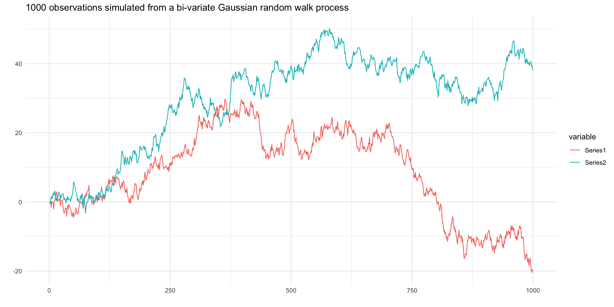

[1] "Start time of analysis: "[1] "2011 Q1"[1] "End time of analysis: "[1] "2023 Q3"Objective: Construct a Bayesian Vector Autoregression model to forecast major macroeconomic indicators for the United States, Australia, Japan, and China to facilitate an investigation into the prospective interdependencies between the economies of these nations.
Question: This research project will examine how trade relationships, investment flows, monetary policy environments, and economic performances within the United States, Australia, Japan and China mutually influence each other, and assess the implications of these interactions for predicting future values of these economic indicators.
Motivation: Since the onset of the COVID-19 pandemic, the global economic landscape has witnessed a series of unprecedented shifts in key macroeconomic indicators, spurred by governments’ adoption of varied expansionary monetary policies. Initially, to buffer their economies, many nations implemented expansive monetary strategies, later swiftly transitioning to interest rate hikes in a bid to manage surging inflation rates—a scenario not seen in decades. The pandemic’s disruption to trade further exacerbated inflationary pressures for some economies, highlighting the intricate interdependencies among major economies with significant trade and financial ties. This period recorded stark contrast in inflation levels, with unprecedented highs in the US and Australia and notably low inflation in China and Japan. Amidst this turmoil, a divergence in economic paths also became apparent, the United States and Australia have witness robust economic rebounds, whereas China and Japan saw more tepid recoveries. This research aims to dissect the nuanced web of economic interdependencies between the United States, Australia, Japan, and China, analyzing how their trade relationships, investment flows, and monetary policy environments have mutually influenced their economic performances. Additionally, it seeks to understand the ramifications of these dynamics for the predictive accuracy of future economic indicators, offering insights into the evolving global economic order.
Proposed Dataset: This research project will utilize data from the International Monetary Fund’s (IMF) extensive database, which offers a comprehensive collection of global economic information. The IMF’s collection includes several key databases such as the World Economic Outlook Databases, International Financial Statistics (IFS), Government Finance Statistics. The analysis will predominantly focus on the IFS database, which encompasses an sizeable collection of financial and economic data from across the global, featuring 1,681 distinct indicators such as consumer price index, interest rates, exchange rates, national accounts, government finance statistics. The data is available in various frequencies – annual, semi-annual, quarterly, monthly, daily, and weekly. As this research is primarily focused on analyzing macroeconomic data that are published on a monthly or quarterly basis, quarterly data from Q1 2011 to Q3 2023 will be used. The analysis will examine key macroeconomic variables including consumer price indexes, foreign direct investments, exchange rates, balance of payments, interest rates and the national gross domestic product of the United States, Australia, Japan, and China.
Variables and Motivation:
| Variables | Original Unit | Final Unit | Mnemonic | Code |
|---|---|---|---|---|
| Prices, Consumer Price Index, All items, Previous period | % Change | % Change | CPI | PCPI_PC_PP_PT |
| International Investment Positions, assets, Direct Investment | US dollar, millions | US dollar, millions | FDI | IAD_BP6_USD |
| Exchange Rates, Domestic Currency per U.S. Dollar, Period Average | US dollar, millions | US dollar, millions | XCH | ENDA_XDC_USD_R |
| Balance of Payments, Current Account, Goods and Services, Net | US dollar, millions | US dollar, millions | BOP | BGS_BP6_USD |
| Gross Domestic Product, Nominal, Seasonally Adjusted | Domestic Currency | US dollar | GDP | NGDP_NSA_XDC |
| Interest rate, Financial, Interest Rates, Monetary Policy-Related Interest Rate | % per annum | IR | FPOLM_PA |
The variables included in this study were chosen with the objective to include key economic indicators that are susceptible to changes in other nations while also having experienced significant fluctuations over the past decade. These variables were chosen not only for their ability to provide insights into the trade relations, investment dynamics and monetary policy frameworks, but also for their roles as barometers of overall economic health and performance. Foreign direct investment (FDI) is a direct indicator of cross- border investment flows and serves as a proxy for economic confidence and integration between nations. Exchange rates directly impact trade balances and investment flows, influencing economic performances. By examining the volatility and trends in exchange rates, insights can be gleaned into how monetary policies and economic conditions in one country can affect its trade partners. Balance of payments is a comprehensive measure that captures the transactions between a country and the rest of the world, offering a holistic view of its economic interactions. For example, some view changes in balance of payments as largely a result of imports and exports, which can cause one country to import the inflation of another country and vice versa. GDP growth is the ultimate measure of economic performance, encapsulating the outcome of various economic activities and policies. Analyzing GDP in the form of percentage change allows for assessing economic momentum and comparing growth rates across countries and over time, offering a clear picture of economic health and trends. Foreign direct investment, exchange rates, balance of payments and gross domestic products were transformed into percentage change from the previous period, aiming to standardize the data, facilitate temporal comparisons and enhancing the interpretability of trends over time. The presence of cyclical trends in the variables, alongside the observed impact of lagged values on future outcomes, highlights the suitability of the Bayesian Vector Autoregression model for our analysis. This model can well capture the temporal dynamics and interdependencies inherent in these economic indicators, offering a robust framework for understanding the nuanced interactions and feedback loops that characterize their behavior over time.
[1] "Start time of analysis: "[1] "2011 Q1"[1] "End time of analysis: "[1] "2023 Q3"Original Variables

Stationary Tests
The Augmented Dickey-Fuller Test is used in this section to test the null hypothesis that a unit root is present in the time series and the time series is non-stationary.
| Dickey-Fuller Statistic | Lag Order | P-value | Country |
|---|---|---|---|
| -3.258408 | 4 | 0.08079872 | JP_CPI |
| -4.299916 | 4 | 0.01 | CN_CPI |
| -3.55799 | 4 | 0.0394958 | US_CPI |
| -3.333834 | 4 | 0.06822768 | AU_CPI |
The lag order chosen in the ADF test is 4, which is appropriate given our data is of quarterly frequency. The result of the ADF test on the CPI data shows that we do not have enough evidence to reject the null hypothesis that the CPI series is unit root non-stationary at 1% significance level, except for China.
| Dickey-Fuller Statistic | Lag Order | P-value | Country |
|---|---|---|---|
| -2.26286 | 4 | 0.4686993 | JP_FDI |
| -2.7189 | 4 | 0.285367 | CN_FDI |
| -3.130793 | 4 | 0.1197816 | US_FDI |
| -1.607673 | 4 | 0.7320914 | AU_FDI |
The ADF results shows that we do not have enough evidence to reject the null hypothesis that the foreign direct investment data is not unit-root stationary for Australia, the United States and Japan at 1% significance level and we do have enough evidence to reject the null hypothesis for China at 1% significance level.
| Dickey-Fuller Statistic | Lag Order | P-value | Country |
|---|---|---|---|
| -1.791111 | 4 | 0.6635047 | JP_XCH |
| -1.565957 | 4 | 0.7575635 | CN_XCH |
| -2.56175 | 4 | 0.3415666 | AU_XCH |
The result of the ADF test on the exchange rate data shows that we do not have enough evidence to reject the null hypothesis that the exchange rate against the dollar series is unit root non-stationary at 1% significance level.
| Dickey-Fuller Statistic | Lag Order | P-value | Country |
|---|---|---|---|
| -2.914308 | 4 | 0.2025054 | JP_BOP |
| -2.50488 | 4 | 0.3695164 | CN_BOP |
| -2.533578 | 4 | 0.3578101 | US_BOP |
| -2.058287 | 4 | 0.5516879 | AU_BOP |
The result of the ADF test on the balance of payments data shows that we do not have enough evidence to reject the null hypothesis that the balance of payments series is unit root non-stationary at 1% significance level for all countries.
| Dickey-Fuller Statistic | Lag Order | P-value | Country |
|---|---|---|---|
| -4.697105 | 4 | 0.01 | JP_GDP |
| -12.41354 | 4 | 0.01 | CN_GDP |
| -3.680691 | 4 | 0.02905248 | US_GDP |
| -4.572706 | 4 | 0.01 | AU_GDP |
The result of the ADF test on the GDP data shows that we do not have enough evidence to reject the null hypothesis that the GDP series is unit root non-stationary at 5% significance level.
We will employ four models to address our proposed problem. Firstly, we will use a standard Bayesian Vector Autoregressive (BVAR) model with independently and identically distributed innovations, as outlined in details in Woźniak (2022). Additionally, we will investigate a large BVAR model with flexible error covariance structures, following the methodology proposed by Chan (2015). Specifically, the second model will incorporate MA(1) Gaussian innovations to better account for potential model misspecifications such as omitted variable bias and to facilitate shrinkage in VAR coefficients. Our third model will be a BVAR incorporating common stochastic volatilities to allow for time varying distribution of volatility terms, which will be useful to handle the impact of specific events like the Covid-19 Global Pandemic. The final model will combined a common stochastic volatility frame work with MA(1) Gaussian innovations, offering a robust approach to volatility modelling.
\[ Y = XA+E\] \[E|X \sim \mathcal{MN}_{T \times N}(0_{T \times N},\Sigma_{N \times N}, I_T)\] \[ A = \begin{bmatrix} \mu_0^T \\ A_1^T \\ \vdots \\ A_p^T \end{bmatrix} , \quad Y = \begin{bmatrix} y_1^T \\ y_2^T \\ \vdots \\ y_T^T \end{bmatrix} , \quad x_t = \begin{bmatrix} 1 \\ y_{t-1}^T \\ \vdots \\ y_{t-p}^T \end{bmatrix} , \quad X = \begin{bmatrix} x_1^T \\ x_2^T \\ \vdots \\ x_T^T \end{bmatrix} , \quad E = \begin{bmatrix} e_1^T \\ e_2^T \\ \vdots \\ e_T^T \end{bmatrix} \]
where
The Bayesian Vector Autoregression model as formulated above provides a robust framework for investigating the relationships among selected economic indicators across different nations. By employing this model, this research aims to quantitatively measure the influence of one country’s economic indicators on another, such as how lagged changes in China’s inflation rate, may influence the GDP growth rate of the United States and vice versa. The BVAR model, with its estimation of coefficients across various lags, offers a deep understanding of both immediate and more delayed economic interactions, which is crucial to analyzing the cyclical nature of trade relationships, investment flows, monetary policy environments, and economic performances and the transmission of these metrics across borders.
The strength of this BVAR model lies in its ability to incorporate prior economic knowledge and beliefs into the estimation process. By setting prior distributions for the matrix of coefficients A and the covariance matrix \(\Sigma\), the model can be tailors to reflect established economic theories regarding international economic linkages and the time it takes for policy changes in one country to affect another. By calibrating the prior variances, particularly for the autoregressive coefficients, we can integrate prior knowledge or hypotheses, such as the presence of unit roots or the diminishing influence of distant lags on current values, into the analysis. When interpreting the estimation output, attention will be given to the posterior means and variances of the coefficients, which represent the model’s “learnt” understanding of the underlying economic structure. The analysis will be supplemented by forecast error variance decompositions to better understand the proportion of the movements in economic indicators that can be accounted for by their own shocks versus shocks to other variables.
The economic context underscoring this analysis is the increased globalization over the past decade, marking an era where economies are more intertwined than ever through trade, capital flows, and policy decisions. This period has witnessed not only the strengthening of global economic ties but also recent calls from political leaders advocating for a reduction in globalization. These contrasting dynamics highlight the complexity of the current global economic landscape, where the push for deeper integration coexists with growing sentiments for retrenchment. This dual trend sets the stage for our investigation, providing a rich context to explore how economic variables across nations influence each other amidst fluctuating levels of global interconnectedness. In this environment, understanding the cross-country spillover effects is vital for policymakers and businesses alike, as decisions made in one country can have far-reaching implications. By addressing these aspects, this research will contribute to the discourse on economic policy formulation, risk assessment, and strategic planning.
We will employ a Normal-Inverse Wishart distribution for the joint distribution of coefficient matrices A and the row-specific variance matrix \(\Sigma\), and a Minnesota prior on the coefficients A. Specifically, we have:
\[\Sigma \sim \mathcal{IW}(S_0, \nu_0) \]
\[p(\Sigma) \propto |\Sigma|^{-\frac{\nu_0+N+1}{2}}exp(-\frac{1}{2}tr(\Sigma^{-1}S_0))\]
\[A|\Sigma \sim \mathcal{MN}_{K \times N}(A_0, \Sigma, V_A)\]
\[p(A|\Sigma) \propto |\Sigma|^{-\frac{K}{2}}exp(-\frac{1}{2}tr(\Sigma^{-1}(A-A_0)^T(A-A_0)))\]
\[(A,\Sigma) \sim \mathcal{NIW}_{K \times N} (A_0, V_A, S_0, \nu_0)\]
\[p(A,\Sigma) \propto |\Sigma|^{-\frac{K+\nu_0+N+1}{2}} \times exp(-\frac{1}{2}tr(\Sigma^{-1}S_0))\times exp(-\frac{1}{2}tr(\Sigma^{-1}(A-A_0)^T(A-A_0)))\]
where
\[V_A = diag(\kappa_2 \quad \kappa_1(\mathbf{p} \otimes I_N^T))\]
\[\mathbf{p} = [1 \quad 2 \quad ... \quad p]\]
\[I_N = [1 \quad 1 \quad ... \quad 1] \in \mathbb{R}^N\]
\[\kappa_1 \text{ is the overall shrinkage level for autoregressive slopes}\]
\[\kappa_2 \text{ is the overall shrinkage lvel for the constant term }\]
Additionally, we adopt commonly used values for the hyperparameters as established in the literature.
\[A_0 = 0\]
\[v_0 = N+3\]
\[S_0 = I_N\]
\[\kappa_1 = 0.2^2 \quad \kappa_2 = 10^2\]
The hyperparameters \(\kappa_1\) and \(\kappa_2\) are specified in a way such that the coefficient associated with a lag l variable is shrunk more heavily to - as lag length increases whereas the intercepts are not shrunk to 0.
The posterior distribution specified above has the form
\[p(Y|A, \Sigma) = (2\pi)^{-\frac{TN}{2}}|\Sigma|^{-\frac{T}{2}}exp(-\frac{1}{2}tr(\Sigma^{-1}(Y-XA)^T(Y-XA))\]
and the joint posterior distribution
\[p(A, \Sigma \mid Y) = \frac{p(A,\Sigma,Y)}{p(Y)}\propto p(A, \Sigma, Y) \propto p(Y|A,\Sigma)\times p(A,\Sigma) = p(Y|A,\Sigma) p(A \mid \Sigma) p(\Sigma)\]
\[\propto |\Sigma|^{-\frac{T}{2}}exp(-\frac{1}{2}tr(\Sigma^{-1}(Y-XA)^T(Y-XA))) \times\]
\[\mid \Sigma \mid^{-\frac{\nu_0+N+K}{2}}exp(-\frac{1}{2}tr(\Sigma^{-1}S_o))exp(-\frac{1}{2}tr(\Sigma^{-1}(A-A_0)^TV_A^{-1}(A-A_0))\]
\[\propto |\Sigma|^{-\frac{T+N+K+\nu_0+1}{2}} \times \exp (-\frac{1}{2}tr(\Sigma^{-1}S_0)) \times \]
\[exp(-\frac{1}{2}tr(\Sigma^{-1}(A_0^TV_a^{-1}A_0+Y^TY-\bar{A}^T\bar{V}^{-1}\bar{A})\times\] \[exp(-\frac{1}{2}tr(\Sigma^{-1}(A-\bar{A})^T\bar{V}^{-1}(A-\bar{A})))\] Hence,
\[p(A, \Sigma \mid Y, X) = p(A \mid Y, X, \Sigma) p(\Sigma \mid Y, X)\]
\[p(A \mid Y, X, \Sigma) = \mathcal{MN}_{k \times N}(\bar{A}, \Sigma, \bar{V})\]
\[p(\Sigma \mid Y, X) = \mathcal{IW}_N(\bar{S}, \bar{\nu})\]
where
\[\bar{V} = (X^TX + V_A^{-1})^{-1}\]
\[\bar{A} = \bar{V}(X^TY + V_A^{-1}A_0)\]
\[\bar{\nu} = T + \nu_0\]
\[\bar{S} = S_0 + Y^TY + A_0^TV_A^{-1}A_0 - \bar{A}^T\bar{V}^{-1}\bar{A}\]
In this setting, we have
then, prior draws can be sampled from
we use the following Gibb’s Sampler algorithm to sample from the posterior distribution:
We discard the first \(S_1\) sample draws to allow the algorithm to converge to the stationary posterior distributiion to obtain \(S_2\) sampled draws from the joint posterior distribution.
\[\left\{A^{(s)}, \Sigma^{(s)}\right\}_{s=S_1+1}^{S_1+S_2}\]
The draws from joint predictive density can then be obtained using the following algorithm:
Incorporating MA(1) Gaussian innovations in a large BVARs model lead to a significant enhancement over traditional BVAR models, especially when forecasting macroeconomic variables for several reasons. Firstly, the variances of economic shocks is rarely constant over time. For example, volatility tends to cluster during periods of economic crisis and is more tranquil during stable times. Incorporating stochastic volatility allows the model to adapt to changing volatility in the data, improving forecasting performance especially in the presence of financial market instability or economic policy shifts. In addition, by allowing for serial correlation in the innovations term, we will be able to capture the momentum or persistence in economic variables that is often observed in real-world data. Recognizing that shocks may have a lasting impact over several periods can enhance the model’s ability to predict future values by considering the path-dependent nature of the economy. Our BVAR model with common stochastic volatility is a natural extension to the standard BVAR model and formulated as below:
3.2.1 Model Specification
\[ Y = XA+E\] \[E|X \sim \mathcal{MN}_{T \times N}(0_{T \times N},\Sigma_{N \times N}, \Omega_{T \times T})\] \[ A = \begin{bmatrix} \mu_0^T \\ A_1^T \\ \vdots \\ A_p^T \end{bmatrix} , \quad Y = \begin{bmatrix} y_1^T \\ y_2^T \\ \vdots \\ y_T^T \end{bmatrix} , \quad x_t = \begin{bmatrix} 1 \\ y_{t-1}^T \\ \vdots \\ y_{t-p}^T \end{bmatrix} , \quad X = \begin{bmatrix} x_1^T \\ x_2^T \\ \vdots \\ x_T^T \end{bmatrix} , \quad E = \begin{bmatrix} e_1^T \\ e_2^T \\ \vdots \\ e_T^T \end{bmatrix} \]
where
with MA(1) innovations, we have, for i = 1,….,N and t = 1,…,T, \[u_{it} = \eta_{it} + \psi \eta_{i,t-1}\] where \(|\psi|<1\) and \(\eta_{it} \sim \mathcal{N}(0,1)\)
In matrix notation, we have:
\[u_i = H_{\psi} \eta_i\]
where
\[ u_i = \begin{bmatrix} u_{i1} \\ u_{i2} \\ \vdots \\ u_{iT} \end{bmatrix} \qquad \eta_i = \begin{bmatrix} \eta_{i1} \\ \eta_{i2} \\ \vdots \\ \eta_{iT} \end{bmatrix} \qquad H_{\psi} = \left( \begin{array}{cccc} 1 & 0 & \cdots & 0 \\ \psi & 1 & \cdots & 0 \\ \vdots & \ddots & \ddots & \vdots \\ 0 & \cdots & \psi & 1 \end{array} \right) \qquad O_{\psi} = diag(1+\psi^2, 1, ..., 1) \]
Hence, we have
\[u_1 \sim \mathcal{N}(0, H_{\psi}O_{\psi}H_{\psi}^T) \qquad \qquad \Omega = H_{\psi}O_{\psi}H_{\psi}^T\] Note that the covariance matrix \(\Omega\) depends on \(\psi\) only.
We consider a prior independent distributions for \((A, \Sigma, \Omega)\), specifically, we have: \[P(A, \Sigma, \Omega) = P(A, \Sigma) \times P(\Omega)\]
We will employ a Normal-Inverse Wishart distribution for the joint distribution of A and \(\Sigma\) and before, \[(A,\Sigma) \sim \mathcal{NIW}_{K \times N}(A_0, V_A, S_0, \nu_0)\]
We apply a truncated normal prior on \(\psi\), \[\psi \sim \mathcal{N}(\psi_0, V_{\psi})\mathbb{1}_{\{|\psi|<1\}}\]
For estimation purposes, we initialize with the following setting:
\[p(Y|A, \Sigma) = (2\pi)^{-\frac{Tn}{2}}|\Sigma|^{-\frac{T}{2}}|\Omega|^{-\frac{N}{2}}exp(-\frac{1}{2}tr(\Sigma^{-1}(Y-XA)^T\Omega^{-1}(Y-XA))\]
\[= (2\pi)^{-\frac{Tn}{2}}|\Sigma|^{-\frac{T}{2}}(1+\psi^2)^{-\frac{N}{2}}exp(-\frac{1}{2}tr(\Sigma^{-1}(Y-XA)^T(H_{\psi}O_{\psi}H_{\psi}^T)^{-1}(Y-XA))\]
\[p(A, \Sigma \mid Y, \Omega) = \frac{p(A,\Sigma,Y, \Omega)}{p(Y, \Omega)}\] \[\propto p(A, \Sigma, Y, \Omega) \propto p(Y \mid A,\Sigma, \Omega)\times p(A,\Sigma, \Omega)\] \[= p(Y \mid A,\Sigma, \Omega) p(A, \Sigma) p(\Omega) = p(Y \mid A,\Sigma, \Omega) p(A \mid \Sigma) p(\Sigma) p(\Omega)\]
\[\propto p(Y \mid A,\Sigma, \Omega) p(A \mid \Sigma) p(\Sigma)\]
\[\propto |\Sigma|^{-\frac{T}{2}}exp(-\frac{1}{2}tr(\Sigma^{-1}(Y-XA)^T\Omega^{-1}(Y-XA)) \times\]
\[\mid \Sigma \mid^{-\frac{\nu_0+N+K}{2}}exp(-\frac{1}{2}tr(\Sigma^{-1}S_o))exp(-\frac{1}{2}tr(\Sigma^{-1}(A-A_0)^TV_A^{-1}(A-A_0))\]
\[\propto |\Sigma|^{-\frac{T+N+K+\nu_0+1}{2}} \times \exp (-\frac{1}{2}tr(\Sigma^{-1}S_0)) \times \] \[exp(-\frac{1}{2}tr(\Sigma^{-1}(A_0^TV_a^{-1}A_0+Y^T\Omega^{-1}Y-\bar{A}^T\bar{V}^{-1}\bar{A})\times\] \[exp(-\frac{1}{2}tr(\Sigma^{-1}(A-\bar{A})^T\bar{V}^{-1}(A-\bar{A})))\]
Hence,
\[p(A, \Sigma \mid Y, X) = p(A \mid Y, X, \Sigma) p(\Sigma \mid Y, X)\]
\[p(A \mid Y, X, \Sigma, \Omega) = \mathcal{MN}_{K \times N}(\bar{A}, \Sigma, \bar{V})\]
\[p(\Sigma \mid Y, X) = \mathcal{IW}_N(\bar{S}, \bar{\nu})\]
where
\[\bar{V} = (X^T\Omega^{-1}X + V_A^{-1})^{-1}\]
\[\bar{A} = \bar{V}(X^T\Omega^{-1}Y + V_A^{-1}A_0)\]
\[\bar{\nu} = T + \nu_0\]
\[\bar{S} = S_0 + Y^T\Omega^{-1}Y + A_0^TV_A^{-1}A_0 - \bar{A}^T\bar{V}^{-1}\bar{A}\] 3. The posterior distribution for the parameter \(\psi\) can be obtained as follows: \[P(\psi|Y, A, \Sigma) = \frac{P(\psi, Y, A, \Sigma)}{P(Y, A, \Sigma)} \propto P(\psi, Y, A, \Sigma) = P(Y|A, \Sigma, \psi) \times P(A,\Sigma, \psi) \]
\[= P(Y|A, \Sigma, \psi) \times P(A, \Sigma) \times P(\psi) \propto P(Y|A, \Sigma, \psi) \times P(\psi)\]
we can sample from the posterior distribution of \(\psi\) using an independence-chain Metropolis-Hastings algorithm.
We obtain posterior estimates of \(A, \Sigma, \psi\) using a Gibbs sampler, specifically, we initialize \(\psi^{(0)}\) and for s = 1,…,S1+S2, we sequentially sample:
The Metropolis-Hastings Algorithm for Sampling \(\psi\) is given as follows:
Initialization:
Proposal Distribution:
Sampling Loop:
For t = 1,…,\(T_1+T_2\)
Generate a candidate \(\psi'^{(t)}\) from \(q(\psi' | \psi^{(t-1)})\).
Check if \(\psi'\) is within the bounds \((-1, 1)\). If not, reject \(\psi'\) (set \(\alpha = 0\)).
Compute the acceptance ratio \(\alpha\): \[ \alpha(\psi^{(t-1)}, \psi') = \min\left(1, \frac{p(Y | A, \Sigma, \psi') p(\psi') q(\psi^{(t-1)} | \psi')}{p(Y | A, \Sigma, \psi^{(t-1)}) p(\psi^{(t-1)}) q(\psi' | \psi^{(t-1)})}\right)\]
Decide to accept or reject:
Generate a random number \(u\) from \(U[0,1]\).
If \(u \leq \alpha\), accept \(\psi'\) and set \(\psi^{(t)} = \psi'\).
Otherwise, reject \(\psi'\) and set \(\psi^{(t)} = \psi^{(t-1)}\).
Burn in period
Obtain one sample of \(\psi\)
We monitor the acceptance rate and adjust \(\tau^2\) as necessary to achieve an optimal rate of about 20-40%.
We note that since \(\Omega\) is a band matrix, we do not need compute \(\Omega^{-1}\), instead, we obtain the Cholesky decomposition \(C_{\Omega}\) of \(\Omega\), which has a time complexity of \(O(T)\). Terms involving \(\Omega^{-1}\) such as \(X^T\Omega^{-1}X\) can be obtained by: \[X^T\Omega^{-1}X = X^T(C_{\Omega}^{-1})^{T}C_{\Omega}^{-1}X=(C_{\Omega}^{-1}X)^T(C_{\Omega}^{-1}X) = \tilde{X}^T\tilde{X}\]
\[ Y = XA+E\]
where
\[ A = \begin{bmatrix} \mu_0^T \\ A_1^T \\ \vdots \\ A_p^T \end{bmatrix} , \quad Y = \begin{bmatrix} y_1^T \\ y_2^T \\ \vdots \\ y_T^T \end{bmatrix} , \quad x_t = \begin{bmatrix} 1 \\ y_{t-1}^T \\ \vdots \\ y_{t-p}^T \end{bmatrix} , \quad X = \begin{bmatrix} x_1^T \\ x_2^T \\ \vdots \\ x_T^T \end{bmatrix} , \quad E = \begin{bmatrix} e_1^T \\ e_2^T \\ \vdots \\ e_T^T \end{bmatrix} \] where
the same as before. But, instead of the column specific matrix as the identity matrix, we specify the column specific matrix as a diagonal matrix \(\Omega\). Specifically, we have:
\[\epsilon_t = u_t + \psi_1 u_{t-1}\]
\[u_t \sim \mathcal{N}(0,e^{h_t} \Sigma)\]
\[h_t = \rho h_{t-1} + u_t^h \quad \text{ follows an Autoregressive process of lag 1 AR(1), and}\]
\[u_t^h \sim N(0,\sigma_h^2)\]
\[\Omega = \left( \begin{array}{cccc} (1 + \psi_1^2) e^{h_1} & \psi_1 e^{h_1} & \cdots & 0 \\ \psi_1 e^{h_1} & \psi_1^2 e^{h_1} + e^{h_2} & \cdots & \vdots \\ 0 & \cdots & \ddots & \vdots \\ \vdots & \cdots & \psi_1^2 e^{h_{T-2}} + e^{h_{T-1}} & \psi_1 e^{h_{T-1}} \\ 0 & \cdots & \psi_1 e^{h_{T-1}} & \psi_1^2 e^{h_{T-1}} + e^{h_T} \end{array} \right)\]
In this specification, each element of \(e_t\) may have distinct variances, and the variances of all innovations can be scaled by a common factor. This approach is economically intuitive, as the volatility of macroeconomic variables often exhibit co-movement. It is important to emphasize that each component of \(e_t\) must adhere to the same univariate time series model.
Here, we consider a priori independent distributions for \((A, \Sigma, \Omega)\), namely:
\[p(A, \Sigma, \Omega) = p(A, \Sigma) \times p(\Omega)\] Given this structure, we can sample from the posterior distribution by sequentially sampling from:
The prior distribution of \((A,\Sigma)\) follow the same normal inverse Wishart prior distribution as outlined in model one. But the variance matrix \(V_A\) for A is different:
\[V_A = diag(v_{A,ii})\]
\[v_{A,ii} = \begin{cases} \kappa_1(\frac{l^2}{\hat{s}_r}) & \text{for a coefficient associated to lag l of variable r} \\ \kappa_2& \text{for an intercept} \end{cases}\]
where \(\hat{s}_r\) is the sample variance of an AR(4) model for the variable r.
\[E|X \sim \mathcal{MN}_{T \times N}(0_{T \times N},\Sigma_{N \times N}, \Omega_{T \times T})\]
and,
For the moving average coefficients, we adopt an uninformative truncated normal prior for the MA coefficient \(\psi\):
\[ \psi \sim \mathcal{N}(\psi_0, V_\psi) \mathbb{1}(|\psi|<1) \]
and we set \(\psi_0 = 0\) and \(V_\psi = 1\) so that the prior centers around 0 with a relatively large variance and has support within (-1,1). Further more, we assume independent priors for \(\sigma^2_h\) and \(\rho\):
\[\sigma_h^2 \sim \mathcal{IG}(\nu_{h_0}, s_{h_0})\]
\[\rho \sim \mathcal{N}(\rho_0, V_\rho) \mathbb{1}(|\rho|<1)\]
We set the hyperparameters \(\nu_{h_0} = 5\), \(s_{h_0} = 0.04\), \(\rho_0 = 0.9\) and \(V_\rho = 0.04\) so that the prior mean of \(\sigma_h^2\) is 0.01 and \(\rho\) is centered at 0.9.
The posterior distribution specified above has the following form:
\[p(Y|A, \Sigma) = (2\pi)^{-\frac{Tn}{2}}|\Sigma|^{-\frac{T}{2}}|\Omega|^{-\frac{N}{2}}exp(-\frac{1}{2}tr(\Sigma^{-1}(Y-XA)^T\Omega^{-1}(Y-XA))\]
and the joint posterior distribution
\[p(A, \Sigma \mid Y, \Omega) = \frac{p(A,\Sigma,Y, \Omega)}{p(Y, \Omega)}\] \[\propto p(A, \Sigma, Y, \Omega) \propto p(Y \mid A,\Sigma, \Omega)\times p(A,\Sigma, \Omega)\] \[= p(Y \mid A,\Sigma, \Omega) p(A, \Sigma) p(\Omega) = p(Y \mid A,\Sigma, \Omega) p(A \mid \Sigma) p(\Sigma) p(\Omega)\]
\[\propto p(Y \mid A,\Sigma, \Omega) p(A \mid \Sigma) p(\Sigma)\]
\[\propto |\Sigma|^{-\frac{T}{2}}exp(-\frac{1}{2}tr(\Sigma^{-1}(Y-XA)^T\Omega^{-1}(Y-XA)) \times\]
\[\mid \Sigma \mid^{-\frac{\nu_0+N+K}{2}}exp(-\frac{1}{2}tr(\Sigma^{-1}S_o))exp(-\frac{1}{2}tr(\Sigma^{-1}(A-A_0)^TV_A^{-1}(A-A_0))\]
\[\propto |\Sigma|^{-\frac{T+N+K+\nu_0+1}{2}} \times \exp (-\frac{1}{2}tr(\Sigma^{-1}S_0)) \times \] \[exp(-\frac{1}{2}tr(\Sigma^{-1}(A_0^TV_a^{-1}A_0+Y^T\Omega^{-1}Y-\bar{A}^T\bar{V}^{-1}\bar{A})\times\] \[exp(-\frac{1}{2}tr(\Sigma^{-1}(A-\bar{A})^T\bar{V}^{-1}(A-\bar{A})))\]
Hence,
\[p(A, \Sigma \mid Y, X) = p(A \mid Y, X, \Sigma) p(\Sigma \mid Y, X)\]
\[p(A \mid Y, X, \Sigma, \Omega) = \mathcal{MN}_{k \times N}(\bar{A}, \Sigma, \bar{V})\]
\[p(\Sigma \mid Y, X) = \mathcal{IW}_N(\bar{S}, \bar{\nu})\]
where
\[\bar{V} = (X^T\Omega^{-1}X + V_A^{-1})^{-1}\]
\[\bar{A} = \bar{V}(X^T\Omega^{-1}Y + V_A^{-1}A_0)\]
\[\bar{\nu} = T + \nu_0\]
\[\bar{S} = S_0 + Y^T\Omega^{-1}Y + A_0^TV_A^{-1}A_0 - \bar{A}^T\bar{V}^{-1}\bar{A}\]
In this setting, we have
then, prior draws can be sampled from
\(\Sigma \sim \mathcal{IW}(S_0, \nu_0)\)
\(A|\Sigma \sim \mathcal{MN}_{K \times N}(A_0, \Sigma, V_A)\)
\(\Omega = \left( \begin{array}{cccc} (1 + \psi_1^2) e^{h_1} & \psi_1 e^{h_1} & \cdots & 0 \\ \psi_1 e^{h_1} & \psi_1^2 e^{h_1} + e^{h_2} & \cdots & \vdots \\ 0 & \cdots & \ddots & \vdots \\ \vdots & \cdots & \psi_1^2 e^{h_{T-2}} + e^{h_{T-1}} & \psi_1 e^{h_{T-1}} \\ 0 & \cdots & \psi_1 e^{h_{T-1}} & \psi_1^2 e^{h_{T-1}} + e^{h_T} \end{array} \right)\)
\(\epsilon_t = u_t + \psi_1 u_{t-1}\)
\(\psi \sim \mathcal{N}(\psi_0, V_\psi) \mathbb{1}(|\psi|<1)\)
\(u_t \sim \mathcal{N}(0,e^{h_t} \Sigma)\)
\(h_t = \rho h_{t-1} + u_t^h\)
\(\rho \sim \mathcal{N}(\rho_0, V_\rho) \mathbb{1}(|\rho|<1)\)
\(u_t^h \sim N(0,\sigma_h^2)\)
\(\sigma_h^2 \sim \mathcal{IG}(\nu_{h_0}, s_{h_0})\)
To sample \(S_1+S_2\) draws of \(\left\{\Omega^{(s)}\right\}_{s=1}^{S_1+S_2}\)
After we have obtained \(\left\{\Omega^{(s)}\right\}_{s=1}^{S_1+S_2}\), we can use the following Gibb’s Sampler algorithm to sample from the posterior distribution \(p(A \mid Y, X, \Sigma, \Omega)\):
We discard the first \(S_1\) sample draws to allow the algorithm to converge to the stationary posterior distributiion to obtain \(S_2\) sampled draws from the joint posterior distribution.
\[\left\{A^{(s)}, \Sigma^{(s)}\right\}_{s=S_1+1}^{S_1+S_2}\]
Sampling from the joint predictive density is the same as before.
We verify that our model can replicate the true parameter of the data generate process by: 1. Generate artificial data containing 1000 observations simulated from a bi-variate Gaussian random walk process with the covariance matrix equal to the identity matrix of order 2. That is,
\[\mathbf{y_t} = \begin{pmatrix} y_t,1 \\ y_t,2\end{pmatrix} = \mathbf{y_{t-1}} + \mathbf{\epsilon_t} = \begin{pmatrix}y_{t-1,1}\\y_{t-1, 2}\end{pmatrix} + \begin{pmatrix}\epsilon_{t,1}\\ \epsilon_{t, 2}\end{pmatrix}\] and
\[\mathbf{\epsilon} \sim iid \mathcal{N}(\mathbf{0}, \mathbf{I_2} )\]

Then we estimate a model with a constant term and 1 lag using the simulated data, show that the posterior mean of the autoregressive and the covariance matrices are close to an identity matrix and that the posterior mean of the constant term is close to a vector of zeros.
[1] "Posterior mean of autoregressive parameter:" [,1] [,2]
[1,] 0.068 0.165
[2,] 1.000 0.001
[3,] -0.003 0.995[1] "Posterior standard deviation of autoregressive parameter:" [,1] [,2]
[1,] 0.074 0.071
[2,] 0.003 0.002
[3,] 0.002 0.002[1] "Posterior mean of covariance matrix:" [,1] [,2]
[1,] 1.051 0.067
[2,] 0.067 0.949[1] "Posterior standard deviation of covariance matrix:" [,1] [,2]
[1,] 0.048 0.032
[2,] 0.032 0.042[1] "Posterior mean of autoregressive parameter:" [,1] [,2] [,3] [,4] [,5] [,6] [,7] [,8] [,9] [,10]
[1,] 0.676 -2.798 2.642 1.633 0.042 0.259 -0.830 -0.630 -7.429 -13.385
[2,] 0.999 0.000 0.000 0.000 0.000 0.000 0.000 0.000 0.000 -0.003
[3,] 0.000 0.999 0.000 0.000 0.000 0.000 0.000 0.000 0.001 0.001
[4,] 0.000 0.000 1.000 0.000 0.000 0.000 0.000 0.000 -0.001 -0.002
[5,] 0.000 0.000 0.000 1.000 0.000 0.000 0.000 0.000 -0.001 0.000
[6,] 0.000 0.000 0.000 0.000 1.000 0.000 0.000 0.000 0.000 0.000
[7,] 0.000 0.000 0.000 0.000 0.000 1.000 0.000 0.000 0.000 -0.001
[8,] 0.000 0.000 0.000 0.000 0.000 0.000 1.000 0.000 0.001 0.000
[9,] 0.000 0.000 0.000 0.000 0.000 0.000 0.000 1.000 0.001 -0.001
[10,] 0.000 0.001 0.001 0.001 0.000 0.000 -0.001 0.000 0.985 0.001
[11,] 0.000 0.004 0.000 -0.002 0.000 0.000 -0.001 0.000 0.000 0.933
[12,] 0.003 0.006 0.005 0.004 0.000 0.000 -0.001 -0.002 -0.032 -0.017
[13,] 0.003 0.005 0.003 0.002 0.000 0.000 -0.001 -0.001 -0.032 -0.005
[14,] 0.000 0.000 0.000 0.000 0.000 0.000 0.000 0.000 0.000 0.000
[15,] 0.000 0.000 0.000 0.000 0.000 0.000 0.000 0.000 0.000 0.000
[16,] 0.000 0.000 0.000 0.000 0.000 0.000 0.000 0.000 0.000 0.000
[17,] 0.000 0.000 0.000 0.000 0.000 0.000 0.000 0.000 0.000 0.000
[18,] 0.001 0.001 0.003 0.001 0.000 0.000 0.000 0.000 -0.023 0.004
[19,] 0.000 0.002 0.000 0.002 0.000 0.000 -0.001 -0.001 -0.007 -0.018
[20,] 0.000 0.000 -0.001 -0.001 0.000 0.000 0.000 0.000 0.000 -0.011
[21,] -0.003 0.001 -0.003 -0.003 0.000 0.000 0.000 0.000 -0.008 -0.011
[22,] -0.001 0.000 -0.002 -0.001 0.000 0.000 0.004 0.004 0.016 0.018
[23,] 0.000 0.000 0.000 0.000 0.000 0.000 0.000 0.000 0.001 0.001
[24,] 0.000 0.000 0.000 0.000 0.000 0.000 0.000 0.000 -0.001 -0.001
[25,] 0.000 0.000 0.000 0.000 0.000 0.000 0.000 0.000 -0.001 0.000
[26,] 0.000 0.000 0.000 0.000 0.000 0.000 0.000 0.000 0.001 0.000
[27,] 0.000 0.000 0.000 0.000 0.000 0.000 0.000 0.000 0.000 0.000
[28,] 0.000 0.000 0.000 0.000 0.000 0.000 0.000 0.000 0.000 0.001
[29,] 0.000 0.000 0.000 0.000 0.000 0.000 0.000 0.000 0.000 0.000
[30,] 0.000 0.000 0.000 0.000 0.000 0.000 0.000 0.000 0.000 -0.001
[31,] 0.000 0.000 0.000 0.000 0.000 0.000 0.000 0.000 0.000 -0.001
[32,] 0.000 0.000 0.000 0.000 0.000 0.000 0.000 0.000 0.000 0.000
[33,] 0.000 0.000 0.000 0.000 0.000 0.000 0.000 0.000 0.000 -0.001
[34,] -0.001 0.000 0.000 0.000 0.000 0.000 0.000 0.000 -0.002 -0.005
[35,] -0.001 0.000 0.000 0.000 0.000 0.000 0.000 0.000 0.002 -0.007
[36,] -0.001 -0.001 -0.001 -0.001 0.000 0.000 0.000 0.000 0.002 -0.007
[37,] 0.000 0.000 0.000 0.000 0.000 0.000 0.000 0.000 0.000 0.000
[38,] 0.000 0.000 0.000 0.000 0.000 0.000 0.000 0.000 0.000 0.000
[39,] 0.000 0.000 0.000 0.000 0.000 0.000 0.000 0.000 0.000 0.000
[40,] 0.000 0.000 0.000 0.000 0.000 0.000 0.000 0.000 0.000 0.000
[41,] 0.000 0.001 0.000 0.000 0.000 0.000 0.000 0.000 -0.001 -0.004
[42,] 0.000 0.000 0.000 0.000 0.000 0.000 0.000 0.000 0.001 0.001
[43,] 0.000 0.000 0.000 0.000 0.000 0.000 0.000 0.000 0.000 0.001
[44,] 0.001 0.000 0.000 0.000 0.000 0.000 0.000 0.000 0.001 -0.003
[45,] 0.000 0.000 0.000 0.000 0.000 0.000 0.001 0.001 -0.002 0.004
[46,] 0.000 0.000 0.000 0.000 0.000 0.000 0.000 0.000 0.000 0.000
[47,] 0.000 0.000 0.000 0.000 0.000 0.000 0.000 0.000 0.000 0.000
[48,] 0.000 0.000 0.000 0.000 0.000 0.000 0.000 0.000 0.000 0.000
[49,] 0.000 0.000 0.000 0.000 0.000 0.000 0.000 0.000 0.000 0.001
[50,] 0.000 0.000 0.000 0.000 0.000 0.000 0.000 0.000 0.000 -0.001
[51,] 0.000 0.000 0.000 0.000 0.000 0.000 0.000 0.000 0.000 0.000
[52,] 0.000 0.000 0.000 0.000 0.000 0.000 0.000 0.000 0.000 0.000
[53,] 0.000 0.000 0.000 0.000 0.000 0.000 0.000 0.000 0.000 0.000
[54,] 0.000 0.000 0.000 0.000 0.000 0.000 0.000 0.000 0.000 0.000
[55,] 0.000 0.000 0.000 0.000 0.000 0.000 0.000 0.000 0.000 0.000
[56,] 0.000 0.000 0.000 0.000 0.000 0.000 0.000 0.000 0.000 -0.001
[57,] 0.000 0.000 0.000 0.000 0.000 0.000 0.000 0.000 0.000 0.000
[58,] 0.001 0.000 0.000 0.000 0.000 0.000 0.000 0.000 -0.001 0.002
[59,] 0.000 0.000 0.000 0.000 0.000 0.000 0.000 0.000 0.001 0.001
[60,] 0.000 0.000 0.000 0.000 0.000 0.000 0.000 0.000 0.000 0.000
[61,] 0.000 0.000 0.000 0.000 0.000 0.000 0.000 0.000 0.000 0.000
[62,] 0.000 0.000 0.000 0.000 0.000 0.000 0.000 0.000 0.000 0.000
[63,] 0.000 0.000 0.000 0.000 0.000 0.000 0.000 0.000 0.000 0.000
[64,] 0.000 0.000 0.000 0.000 0.000 0.000 0.000 0.000 0.001 -0.003
[65,] 0.000 0.000 0.000 0.000 0.000 0.000 0.000 0.000 -0.001 -0.001
[66,] 0.000 0.000 0.000 0.000 0.000 0.000 0.000 0.000 0.000 -0.002
[67,] 0.000 0.000 0.000 0.000 0.000 0.000 0.000 0.000 0.001 -0.002
[68,] 0.000 0.000 0.000 0.000 0.000 0.000 0.000 0.000 -0.001 0.000
[69,] 0.000 0.000 0.000 0.000 0.000 0.000 0.000 0.000 0.000 0.000
[70,] 0.000 0.000 0.000 0.000 0.000 0.000 0.000 0.000 0.000 0.000
[71,] 0.000 0.000 0.000 0.000 0.000 0.000 0.000 0.000 0.000 0.000
[72,] 0.000 0.000 0.000 0.000 0.000 0.000 0.000 0.000 0.000 0.000
[73,] 0.000 0.000 0.000 0.000 0.000 0.000 0.000 0.000 0.000 0.000
[74,] 0.000 0.000 0.000 0.000 0.000 0.000 0.000 0.000 0.000 0.000
[75,] 0.000 0.000 0.000 0.000 0.000 0.000 0.000 0.000 0.000 0.000
[76,] 0.000 0.000 0.000 0.000 0.000 0.000 0.000 0.000 0.000 0.000
[77,] 0.000 0.000 0.000 0.000 0.000 0.000 0.000 0.000 0.000 0.000
[78,] 0.000 0.000 0.000 0.000 0.000 0.000 0.000 0.000 0.000 0.000
[79,] 0.000 0.000 0.000 0.000 0.000 0.000 0.000 0.000 0.000 -0.001
[80,] 0.000 0.000 0.000 0.000 0.000 0.000 0.000 0.000 -0.001 0.000
[81,] 0.000 0.000 0.000 0.000 0.000 0.000 0.000 0.000 -0.001 -0.002
[82,] 0.000 0.000 0.000 0.000 0.000 0.000 0.000 0.000 0.000 -0.001
[83,] 0.000 0.000 0.000 0.000 0.000 0.000 0.000 0.000 0.000 0.000
[84,] 0.000 0.000 0.000 0.000 0.000 0.000 0.000 0.000 0.000 0.000
[85,] 0.000 0.000 0.000 0.000 0.000 0.000 0.000 0.000 0.000 0.000
[86,] 0.000 0.000 0.000 0.000 0.000 0.000 0.000 0.000 0.000 0.000
[87,] 0.000 0.000 0.000 0.000 0.000 0.000 0.000 0.000 0.000 -0.001
[88,] 0.000 0.000 0.000 0.000 0.000 0.000 0.000 0.000 0.000 0.001
[89,] 0.000 0.000 0.000 0.000 0.000 0.000 0.000 0.000 0.000 0.000
[90,] 0.000 0.000 0.000 0.000 0.000 0.000 0.000 0.000 0.000 0.000
[91,] 0.000 0.000 0.000 0.000 0.000 0.000 0.000 0.000 0.000 -0.001
[92,] 0.000 0.000 0.000 0.000 0.000 0.000 0.000 0.000 0.000 0.000
[93,] 0.000 0.000 0.000 0.000 0.000 0.000 0.000 0.000 0.000 0.000
[94,] 0.000 0.000 0.000 0.000 0.000 0.000 0.000 0.000 0.000 0.000
[95,] 0.000 0.000 0.000 0.000 0.000 0.000 0.000 0.000 0.000 0.000
[96,] 0.000 0.000 0.000 0.000 0.000 0.000 0.000 0.000 0.000 -0.001
[97,] 0.000 0.000 0.000 0.000 0.000 0.000 0.000 0.000 0.000 0.000
[98,] 0.000 0.000 0.000 0.000 0.000 0.000 0.000 0.000 0.000 0.000
[99,] 0.000 0.000 0.000 0.000 0.000 0.000 0.000 0.000 0.000 0.000
[100,] 0.000 0.000 0.000 0.000 0.000 0.000 0.000 0.000 0.000 0.000
[101,] 0.000 0.000 0.000 0.000 0.000 0.000 0.000 0.000 0.000 0.000
[102,] 0.000 0.000 0.000 0.000 0.000 0.000 0.000 0.000 0.000 0.001
[103,] 0.000 0.000 0.000 0.000 0.000 0.000 0.000 0.000 0.000 0.000
[104,] 0.000 0.000 0.000 0.000 0.000 0.000 0.000 0.000 0.001 0.001
[105,] 0.000 0.000 0.000 0.000 0.000 0.000 0.000 0.000 0.000 0.001
[106,] 0.000 0.000 0.000 0.000 0.000 0.000 0.000 0.000 0.000 0.000
[107,] 0.000 0.000 0.000 0.000 0.000 0.000 0.000 0.000 0.000 0.000
[108,] 0.000 0.000 0.000 0.000 0.000 0.000 0.000 0.000 0.000 0.000
[109,] 0.000 0.000 0.000 0.000 0.000 0.000 0.000 0.000 0.000 -0.001
[110,] 0.000 0.000 0.000 0.000 0.000 0.000 0.000 0.000 0.000 0.002
[111,] 0.000 0.000 0.000 0.000 0.000 0.000 0.000 0.000 0.000 -0.001
[112,] 0.000 0.000 0.000 0.000 0.000 0.000 0.000 0.000 0.000 0.000
[113,] 0.000 0.000 0.000 0.000 0.000 0.000 0.000 0.000 0.000 0.000
[114,] 0.000 0.000 0.000 0.000 0.000 0.000 0.000 0.000 0.000 -0.001
[115,] 0.000 0.000 0.000 0.000 0.000 0.000 0.000 0.000 0.000 0.000
[116,] 0.000 0.000 0.000 0.000 0.000 0.000 0.000 0.000 0.000 0.000
[,11] [,12] [,13] [,14] [,15] [,16] [,17] [,18]
[1,] -2.396 16.206 3813.932 101324.685 -130626.565 -12769.872 1.743 12.170
[2,] 0.001 0.000 -1.648 -18.679 2.979 1.055 0.001 -0.001
[3,] 0.000 0.002 -4.550 -0.431 4.020 -2.214 0.001 0.002
[4,] -0.004 -0.003 -4.300 -9.939 -4.324 0.510 -0.002 -0.002
[5,] -0.001 -0.002 -5.298 -13.038 1.036 0.943 -0.001 0.000
[6,] 0.002 0.002 -0.840 6.879 -0.195 -0.773 -0.001 0.002
[7,] -0.004 -0.004 -2.738 -2.299 1.807 -0.156 0.001 -0.001
[8,] 0.002 0.002 6.513 -18.281 7.103 -0.074 0.002 -0.002
[9,] 0.002 0.002 6.233 -14.130 8.582 -0.879 0.002 -0.001
[10,] -0.027 -0.024 4.471 -27.569 -0.466 -1.063 0.001 -0.005
[11,] -0.029 -0.014 21.961 -255.888 50.349 13.568 0.009 -0.030
[12,] 0.853 -0.108 27.908 -86.770 -37.789 1.720 0.001 -0.050
[13,] -0.117 0.881 31.567 -56.357 -4.537 2.213 -0.010 -0.030
[14,] 0.000 0.000 0.883 -0.455 -0.187 -0.065 0.000 0.000
[15,] 0.000 0.000 0.183 0.113 -0.133 0.009 0.000 0.000
[16,] 0.000 0.000 0.159 -0.842 0.779 -0.081 0.000 0.000
[17,] 0.000 0.000 0.110 -1.591 -0.632 0.808 0.000 0.000
[18,] 0.000 -0.002 21.846 1.360 -14.792 7.468 0.951 0.018
[19,] -0.049 -0.022 28.005 -103.173 -23.668 -0.895 0.018 0.946
[20,] -0.006 0.005 -5.332 -45.080 -6.603 0.868 0.001 -0.014
[21,] -0.013 -0.004 -20.094 -66.474 -32.766 14.444 -0.020 -0.020
[22,] 0.034 0.005 65.422 -51.374 85.419 -7.402 0.046 0.015
[23,] 0.003 0.001 -1.656 1.853 3.470 0.058 0.003 0.001
[24,] 0.000 0.000 3.480 2.302 0.841 0.197 0.000 0.000
[25,] -0.002 -0.002 0.615 -3.094 -0.233 -0.038 0.000 -0.001
[26,] 0.002 0.002 -1.156 -1.842 -0.580 0.102 0.000 0.001
[27,] 0.001 0.000 0.166 -1.125 1.396 0.431 0.001 0.000
[28,] 0.001 0.000 0.601 -0.184 2.279 -0.302 0.000 0.001
[29,] 0.000 0.000 -0.919 -2.111 1.295 -0.155 0.001 0.000
[30,] 0.000 0.001 -1.399 -0.535 -1.565 -0.242 -0.001 0.000
[31,] 0.001 0.001 1.036 -4.358 1.722 0.011 0.000 0.000
[32,] 0.000 0.000 0.322 -1.678 1.199 -0.458 0.000 0.000
[33,] 0.004 0.005 2.694 -1.778 0.938 0.232 -0.006 0.001
[34,] -0.005 -0.004 11.228 -17.524 6.296 2.196 0.000 -0.005
[35,] 0.009 0.013 -7.278 -39.665 3.651 -0.108 -0.006 0.000
[36,] 0.006 0.011 -10.988 -26.032 3.105 0.572 -0.007 0.002
[37,] 0.000 0.000 -0.065 0.183 0.158 0.080 0.000 0.000
[38,] 0.000 0.000 0.037 0.658 0.113 0.020 0.000 0.000
[39,] 0.000 0.000 0.215 0.608 -0.657 0.137 0.000 0.000
[40,] 0.000 0.000 0.595 1.278 -0.646 -0.071 0.000 0.000
[41,] -0.007 -0.005 4.682 -10.190 -1.934 0.180 -0.005 -0.006
[42,] 0.005 0.004 -5.389 -8.632 4.810 1.297 -0.001 0.005
[43,] 0.002 0.000 1.292 1.703 2.792 -0.405 0.000 0.002
[44,] 0.004 -0.001 6.956 -4.886 11.742 -0.003 -0.003 0.002
[45,] 0.008 -0.001 24.152 -11.213 18.760 1.269 0.001 0.007
[46,] 0.001 0.001 -0.747 0.293 0.047 -0.173 0.000 0.000
[47,] -0.001 -0.001 0.421 -0.495 1.264 0.416 0.000 0.000
[48,] 0.000 0.000 0.804 -0.193 0.242 -0.011 0.000 0.000
[49,] -0.001 -0.001 -0.482 1.874 -1.318 -0.146 0.000 0.000
[50,] 0.000 -0.001 0.494 -1.211 0.511 0.277 0.000 0.000
[51,] 0.000 0.000 -0.181 -0.097 -0.368 -0.071 0.000 0.000
[52,] 0.000 0.000 0.701 0.966 0.384 -0.110 0.000 0.000
[53,] -0.001 -0.001 -0.206 -2.674 -0.509 -0.104 0.000 0.000
[54,] 0.000 0.000 0.369 1.421 -0.184 -0.033 0.000 0.000
[55,] 0.000 0.000 -0.268 0.210 0.308 -0.302 0.000 0.000
[56,] -0.002 -0.002 1.451 -4.734 0.584 -0.090 0.000 -0.002
[57,] 0.005 0.003 0.632 6.930 -3.161 0.254 0.001 -0.001
[58,] -0.003 -0.005 -1.945 -5.357 -0.253 -1.505 -0.001 -0.001
[59,] 0.001 -0.003 3.100 -0.758 1.928 -0.259 0.002 -0.001
[60,] 0.000 0.000 0.088 -0.701 0.191 0.145 0.000 0.000
[61,] 0.000 0.000 -0.137 -0.027 0.009 0.017 0.000 0.000
[62,] 0.000 0.000 -0.061 1.165 0.547 -0.277 0.000 0.000
[63,] 0.000 0.000 -0.817 0.915 0.393 0.341 0.000 0.000
[64,] -0.001 0.000 0.583 -1.292 3.282 0.378 0.000 0.000
[65,] -0.006 -0.003 -1.306 -10.030 -3.775 -0.720 0.001 -0.004
[66,] -0.001 0.000 -1.258 -3.733 -0.287 -0.080 0.001 -0.001
[67,] 0.000 0.000 -1.745 -6.317 3.334 0.326 0.003 -0.001
[68,] 0.002 -0.001 11.185 -4.683 6.340 0.660 -0.002 0.001
[69,] 0.000 -0.001 -0.717 1.712 -0.139 0.044 0.000 0.000
[70,] 0.001 0.000 -0.720 -0.775 0.654 0.046 0.000 0.000
[71,] 0.000 0.000 0.281 -1.317 -0.162 0.087 0.000 0.000
[72,] 0.001 0.001 0.319 0.190 0.765 0.264 0.000 0.000
[73,] 0.000 0.000 -0.086 0.880 0.078 -0.036 0.000 0.000
[74,] 0.000 0.000 -0.095 0.561 0.444 -0.010 0.000 0.000
[75,] 0.000 0.000 -0.281 1.171 -0.129 -0.059 0.000 0.000
[76,] 0.000 0.000 -0.384 0.274 -0.474 -0.081 0.000 0.000
[77,] 0.000 0.000 0.224 -1.067 0.613 -0.067 0.001 -0.001
[78,] 0.001 0.001 -0.091 0.083 -0.337 -0.046 0.000 0.000
[79,] 0.002 0.001 -0.250 -4.244 3.148 0.125 0.000 0.000
[80,] -0.003 -0.002 -1.606 9.391 -3.964 0.057 -0.001 0.001
[81,] -0.002 -0.001 -3.062 -2.545 -0.572 0.272 -0.001 0.000
[82,] 0.000 0.000 -2.143 -4.322 1.392 0.666 0.000 0.001
[83,] 0.000 0.000 0.073 0.724 -0.259 -0.157 0.000 0.000
[84,] 0.000 0.000 -0.034 0.193 -0.271 -0.055 0.000 0.000
[85,] 0.000 0.000 -0.121 -1.217 -0.140 0.261 0.000 0.000
[86,] 0.000 0.000 0.599 1.838 -1.233 -0.271 0.000 0.000
[87,] 0.001 0.000 0.264 -0.217 1.912 0.189 0.001 0.000
[88,] 0.001 0.000 -0.207 2.702 -0.876 -0.176 -0.001 0.001
[89,] 0.000 0.000 0.091 1.346 -1.278 0.082 -0.001 0.000
[90,] -0.001 0.000 -0.374 1.285 -3.109 0.144 -0.001 0.000
[91,] 0.002 0.000 8.455 -3.715 6.349 0.692 -0.001 0.001
[92,] 0.000 0.000 -0.494 1.253 -0.082 -0.164 0.000 0.000
[93,] 0.001 0.000 -0.326 -1.029 0.943 0.280 0.000 0.000
[94,] 0.000 0.000 -0.011 2.301 -0.180 -0.190 0.000 0.000
[95,] 0.000 0.000 -0.285 -0.561 -0.257 -0.117 0.000 0.000
[96,] 0.000 0.000 0.170 -1.522 0.704 -0.111 0.000 0.000
[97,] 0.000 -0.001 0.408 -0.710 0.678 -0.023 0.000 0.000
[98,] 0.000 0.000 -0.042 -0.072 0.505 0.056 0.000 0.000
[99,] 0.000 0.000 0.190 0.576 -0.152 0.127 0.000 0.000
[100,] 0.000 0.000 0.435 -0.310 -0.261 -0.126 0.000 0.000
[101,] -0.001 0.000 -0.674 -0.289 0.251 0.049 0.000 0.000
[102,] 0.001 0.000 -0.483 3.916 -1.113 -0.027 0.000 0.001
[103,] 0.000 0.000 -0.462 0.157 -0.964 -0.297 -0.001 0.001
[104,] 0.001 0.001 1.249 7.069 -2.853 -0.093 0.000 0.000
[105,] 0.000 0.001 0.265 3.766 -3.508 -0.051 0.000 0.000
[106,] 0.000 0.000 -0.068 -0.090 -0.121 0.056 0.000 0.000
[107,] 0.000 0.000 0.040 -0.114 -0.069 -0.019 0.000 0.000
[108,] 0.000 0.000 -0.026 0.918 -0.564 -0.164 0.000 0.000
[109,] 0.000 0.000 -0.235 -0.222 -0.709 -0.232 0.000 0.000
[110,] 0.001 0.000 -1.427 8.064 -1.604 -0.228 -0.001 0.001
[111,] -0.002 0.000 0.195 -0.680 -1.157 -0.145 0.001 -0.002
[112,] 0.000 0.000 0.459 0.501 0.402 -0.339 0.000 0.000
[113,] -0.001 -0.001 -1.230 -1.007 -0.051 -0.763 0.001 0.000
[114,] 0.001 -0.001 4.394 -1.534 4.000 0.451 0.000 0.000
[115,] 0.000 0.000 -0.343 0.676 -0.435 -0.063 0.000 0.000
[116,] 0.000 0.000 -0.214 0.273 -0.338 -0.191 0.000 0.000
[,19] [,20] [,21] [,22] [,23]
[1,] 6.435 4.779 -9.447 -1.009 -0.268
[2,] 0.000 -0.001 0.000 0.000 0.000
[3,] -0.002 0.000 -0.001 0.000 0.000
[4,] -0.001 -0.005 0.003 0.000 0.000
[5,] -0.001 -0.004 0.002 0.000 0.000
[6,] 0.000 0.000 0.001 0.000 0.000
[7,] 0.000 0.002 0.001 0.000 0.000
[8,] 0.000 0.001 -0.002 0.000 0.000
[9,] 0.000 0.001 -0.001 0.000 0.000
[10,] 0.006 0.011 -0.014 0.000 0.000
[11,] -0.010 -0.014 -0.017 0.000 0.000
[12,] 0.015 0.019 -0.003 0.000 0.000
[13,] 0.020 0.024 0.006 0.000 0.000
[14,] 0.000 0.000 0.000 0.000 0.000
[15,] 0.000 0.000 0.000 0.000 0.000
[16,] 0.000 0.000 0.000 0.000 0.000
[17,] 0.000 0.000 0.000 0.000 0.000
[18,] 0.011 0.015 -0.008 0.000 0.000
[19,] -0.004 -0.015 -0.005 0.000 0.000
[20,] 0.991 -0.017 0.001 0.000 0.000
[21,] -0.014 0.945 0.007 0.000 0.000
[22,] 0.009 0.036 0.974 0.001 0.000
[23,] 0.000 0.000 -0.001 1.000 0.000
[24,] 0.001 0.000 -0.001 0.000 1.000
[25,] 0.000 -0.001 0.000 0.000 0.000
[26,] 0.000 -0.001 0.001 0.000 0.000
[27,] 0.000 0.000 0.000 0.000 0.000
[28,] 0.000 0.001 0.000 0.000 0.000
[29,] 0.000 0.000 0.000 0.000 0.000
[30,] 0.000 0.000 0.001 0.000 0.000
[31,] 0.000 0.000 0.000 0.000 0.000
[32,] 0.000 0.001 0.000 0.000 0.000
[33,] -0.001 -0.002 0.001 0.000 0.000
[34,] 0.001 -0.003 -0.001 0.000 0.000
[35,] -0.005 -0.012 0.003 0.000 0.000
[36,] -0.006 -0.014 0.005 0.000 0.000
[37,] 0.000 0.000 0.000 0.000 0.000
[38,] 0.000 0.000 0.000 0.000 0.000
[39,] 0.000 0.000 0.000 0.000 0.000
[40,] 0.000 0.000 0.000 0.000 0.000
[41,] -0.001 -0.005 0.004 0.000 0.000
[42,] 0.001 0.001 0.000 0.000 0.000
[43,] 0.001 0.002 0.000 0.000 0.000
[44,] 0.000 0.000 0.003 0.000 0.000
[45,] 0.005 0.012 -0.010 0.000 0.000
[46,] 0.000 -0.001 0.000 0.000 0.000
[47,] 0.000 0.000 0.000 0.000 0.000
[48,] 0.000 0.000 0.000 0.000 0.000
[49,] 0.000 0.000 0.000 0.000 0.000
[50,] 0.000 0.000 0.000 0.000 0.000
[51,] 0.000 0.000 0.000 0.000 0.000
[52,] 0.000 0.000 0.000 0.000 0.000
[53,] 0.000 0.000 0.000 0.000 0.000
[54,] 0.000 0.000 0.000 0.000 0.000
[55,] 0.000 0.000 0.000 0.000 0.000
[56,] 0.000 -0.001 0.001 0.000 0.000
[57,] 0.000 -0.001 -0.001 0.000 0.000
[58,] 0.001 0.002 0.002 0.000 0.000
[59,] 0.001 0.000 0.002 0.000 0.000
[60,] 0.000 0.000 0.000 0.000 0.000
[61,] 0.000 0.000 0.000 0.000 0.000
[62,] 0.000 0.000 0.000 0.000 0.000
[63,] 0.000 0.000 0.000 0.000 0.000
[64,] -0.001 -0.002 0.001 0.000 0.000
[65,] 0.000 0.000 0.001 0.000 0.000
[66,] 0.000 0.000 0.000 0.000 0.000
[67,] 0.000 -0.001 0.000 0.000 0.000
[68,] 0.002 0.003 -0.003 0.000 0.000
[69,] 0.000 -0.001 0.000 0.000 0.000
[70,] 0.000 0.000 0.000 0.000 0.000
[71,] 0.000 0.000 0.000 0.000 0.000
[72,] 0.000 0.000 0.000 0.000 0.000
[73,] 0.000 0.000 0.000 0.000 0.000
[74,] 0.000 0.000 0.000 0.000 0.000
[75,] 0.000 0.000 0.000 0.000 0.000
[76,] 0.000 0.000 0.000 0.000 0.000
[77,] 0.000 0.000 0.000 0.000 0.000
[78,] 0.000 0.000 0.000 0.000 0.000
[79,] 0.000 0.000 0.000 0.000 0.000
[80,] 0.000 0.001 0.001 0.000 0.000
[81,] 0.000 -0.001 0.001 0.000 0.000
[82,] 0.000 0.000 0.000 0.000 0.000
[83,] 0.000 0.000 0.000 0.000 0.000
[84,] 0.000 0.000 0.000 0.000 0.000
[85,] 0.000 0.000 0.000 0.000 0.000
[86,] 0.000 0.000 0.000 0.000 0.000
[87,] 0.000 0.001 0.000 0.000 0.000
[88,] 0.001 0.000 0.000 0.000 0.000
[89,] 0.000 0.000 0.000 0.000 0.000
[90,] 0.000 0.000 0.001 0.000 0.000
[91,] 0.001 0.002 -0.001 0.000 0.000
[92,] 0.000 0.000 0.000 0.000 0.000
[93,] 0.000 0.000 0.000 0.000 0.000
[94,] 0.000 0.000 0.000 0.000 0.000
[95,] 0.000 0.000 0.000 0.000 0.000
[96,] 0.000 0.000 0.000 0.000 0.000
[97,] 0.000 0.000 0.000 0.000 0.000
[98,] 0.000 0.000 0.000 0.000 0.000
[99,] 0.000 0.000 0.000 0.000 0.000
[100,] 0.000 0.000 0.000 0.000 0.000
[101,] 0.000 0.000 0.000 0.000 0.000
[102,] 0.000 0.000 0.000 0.000 0.000
[103,] 0.000 0.000 0.001 0.000 0.000
[104,] 0.000 0.000 0.001 0.000 0.000
[105,] 0.000 0.000 0.000 0.000 0.000
[106,] 0.000 0.000 0.000 0.000 0.000
[107,] 0.000 0.000 0.000 0.000 0.000
[108,] 0.000 0.000 0.000 0.000 0.000
[109,] 0.000 0.000 0.000 0.000 0.000
[110,] 0.000 0.000 0.000 0.000 0.000
[111,] 0.000 -0.001 0.000 0.000 0.000
[112,] 0.000 0.001 0.000 0.000 0.000
[113,] 0.000 0.000 0.000 0.000 0.000
[114,] 0.000 0.001 0.000 0.000 0.000
[115,] 0.000 0.000 0.000 0.000 0.000
[116,] 0.000 0.000 0.000 0.000 0.000[1] "Posterior standard deviation of autoregressive parameter:" [,1] [,2] [,3] [,4] [,5] [,6] [,7] [,8] [,9] [,10] [,11]
[1,] 1.591 1.561 1.379 1.285 0.401 0.409 0.704 0.624 7.166 13.966 22.761
[2,] 0.006 0.006 0.005 0.005 0.002 0.002 0.003 0.002 0.027 0.055 0.086
[3,] 0.006 0.006 0.005 0.005 0.002 0.002 0.003 0.002 0.028 0.053 0.086
[4,] 0.006 0.006 0.005 0.005 0.001 0.002 0.003 0.002 0.027 0.053 0.087
[5,] 0.006 0.006 0.005 0.005 0.001 0.002 0.003 0.002 0.027 0.054 0.086
[6,] 0.006 0.006 0.005 0.005 0.001 0.002 0.003 0.002 0.027 0.054 0.087
[7,] 0.006 0.006 0.005 0.005 0.001 0.002 0.003 0.002 0.028 0.054 0.087
[8,] 0.006 0.006 0.005 0.005 0.002 0.002 0.003 0.002 0.027 0.053 0.085
[9,] 0.006 0.006 0.005 0.005 0.001 0.002 0.003 0.002 0.027 0.051 0.084
[10,] 0.006 0.006 0.005 0.005 0.002 0.002 0.003 0.002 0.027 0.053 0.085
[11,] 0.006 0.006 0.005 0.005 0.001 0.001 0.003 0.002 0.026 0.051 0.084
[12,] 0.006 0.006 0.005 0.005 0.001 0.002 0.002 0.002 0.025 0.051 0.081
[13,] 0.006 0.006 0.005 0.005 0.001 0.002 0.003 0.002 0.026 0.051 0.083
[14,] 0.000 0.000 0.000 0.000 0.000 0.000 0.000 0.000 0.000 0.000 0.000
[15,] 0.000 0.000 0.000 0.000 0.000 0.000 0.000 0.000 0.000 0.000 0.000
[16,] 0.000 0.000 0.000 0.000 0.000 0.000 0.000 0.000 0.000 0.000 0.000
[17,] 0.000 0.000 0.000 0.000 0.000 0.000 0.000 0.000 0.000 0.000 0.000
[18,] 0.006 0.006 0.005 0.005 0.001 0.002 0.003 0.002 0.026 0.052 0.083
[19,] 0.006 0.006 0.005 0.005 0.001 0.002 0.003 0.002 0.027 0.054 0.084
[20,] 0.006 0.006 0.005 0.005 0.001 0.002 0.003 0.002 0.027 0.055 0.087
[21,] 0.006 0.006 0.005 0.005 0.001 0.002 0.003 0.002 0.026 0.052 0.086
[22,] 0.005 0.005 0.004 0.004 0.001 0.001 0.002 0.002 0.023 0.047 0.072
[23,] 0.006 0.006 0.005 0.005 0.001 0.002 0.003 0.002 0.027 0.054 0.086
[24,] 0.006 0.006 0.005 0.005 0.001 0.002 0.003 0.002 0.028 0.053 0.087
[25,] 0.003 0.003 0.003 0.002 0.001 0.001 0.001 0.001 0.014 0.027 0.042
[26,] 0.003 0.003 0.003 0.002 0.001 0.001 0.001 0.001 0.014 0.027 0.044
[27,] 0.003 0.003 0.003 0.002 0.001 0.001 0.001 0.001 0.014 0.026 0.043
[28,] 0.003 0.003 0.003 0.003 0.001 0.001 0.001 0.001 0.014 0.027 0.044
[29,] 0.003 0.003 0.003 0.002 0.001 0.001 0.001 0.001 0.014 0.027 0.044
[30,] 0.003 0.003 0.003 0.002 0.001 0.001 0.001 0.001 0.014 0.027 0.044
[31,] 0.003 0.003 0.003 0.002 0.001 0.001 0.001 0.001 0.013 0.027 0.042
[32,] 0.003 0.003 0.003 0.002 0.001 0.001 0.001 0.001 0.014 0.027 0.044
[33,] 0.003 0.003 0.003 0.002 0.001 0.001 0.001 0.001 0.014 0.027 0.043
[34,] 0.003 0.003 0.003 0.002 0.001 0.001 0.001 0.001 0.014 0.027 0.044
[35,] 0.003 0.003 0.003 0.002 0.001 0.001 0.001 0.001 0.013 0.027 0.043
[36,] 0.003 0.003 0.003 0.002 0.001 0.001 0.001 0.001 0.013 0.027 0.041
[37,] 0.000 0.000 0.000 0.000 0.000 0.000 0.000 0.000 0.000 0.000 0.000
[38,] 0.000 0.000 0.000 0.000 0.000 0.000 0.000 0.000 0.000 0.000 0.000
[39,] 0.000 0.000 0.000 0.000 0.000 0.000 0.000 0.000 0.000 0.000 0.000
[40,] 0.000 0.000 0.000 0.000 0.000 0.000 0.000 0.000 0.000 0.000 0.000
[41,] 0.003 0.003 0.003 0.002 0.001 0.001 0.001 0.001 0.014 0.027 0.042
[42,] 0.003 0.003 0.003 0.002 0.001 0.001 0.001 0.001 0.014 0.027 0.043
[43,] 0.003 0.003 0.003 0.002 0.001 0.001 0.001 0.001 0.014 0.027 0.043
[44,] 0.003 0.003 0.003 0.003 0.001 0.001 0.001 0.001 0.014 0.027 0.043
[45,] 0.003 0.003 0.003 0.002 0.001 0.001 0.001 0.001 0.013 0.026 0.043
[46,] 0.003 0.003 0.003 0.002 0.001 0.001 0.001 0.001 0.014 0.027 0.043
[47,] 0.003 0.003 0.003 0.002 0.001 0.001 0.001 0.001 0.014 0.027 0.043
[48,] 0.002 0.002 0.002 0.002 0.000 0.001 0.001 0.001 0.009 0.018 0.029
[49,] 0.002 0.002 0.002 0.002 0.001 0.001 0.001 0.001 0.009 0.018 0.028
[50,] 0.002 0.002 0.002 0.002 0.000 0.001 0.001 0.001 0.009 0.018 0.028
[51,] 0.002 0.002 0.002 0.002 0.000 0.001 0.001 0.001 0.009 0.017 0.029
[52,] 0.002 0.002 0.002 0.002 0.000 0.001 0.001 0.001 0.009 0.017 0.029
[53,] 0.002 0.002 0.002 0.002 0.000 0.001 0.001 0.001 0.009 0.018 0.029
[54,] 0.002 0.002 0.002 0.002 0.001 0.001 0.001 0.001 0.009 0.018 0.029
[55,] 0.002 0.002 0.002 0.002 0.001 0.001 0.001 0.001 0.009 0.018 0.029
[56,] 0.002 0.002 0.002 0.002 0.000 0.001 0.001 0.001 0.009 0.018 0.029
[57,] 0.002 0.002 0.002 0.002 0.000 0.001 0.001 0.001 0.009 0.018 0.029
[58,] 0.002 0.002 0.002 0.002 0.001 0.001 0.001 0.001 0.009 0.017 0.028
[59,] 0.002 0.002 0.002 0.002 0.001 0.001 0.001 0.001 0.009 0.017 0.029
[60,] 0.000 0.000 0.000 0.000 0.000 0.000 0.000 0.000 0.000 0.000 0.000
[61,] 0.000 0.000 0.000 0.000 0.000 0.000 0.000 0.000 0.000 0.000 0.000
[62,] 0.000 0.000 0.000 0.000 0.000 0.000 0.000 0.000 0.000 0.000 0.000
[63,] 0.000 0.000 0.000 0.000 0.000 0.000 0.000 0.000 0.000 0.000 0.000
[64,] 0.002 0.002 0.002 0.002 0.000 0.001 0.001 0.001 0.009 0.018 0.029
[65,] 0.002 0.002 0.002 0.002 0.001 0.001 0.001 0.001 0.009 0.018 0.029
[66,] 0.002 0.002 0.002 0.002 0.001 0.001 0.001 0.001 0.009 0.017 0.029
[67,] 0.002 0.002 0.002 0.002 0.000 0.001 0.001 0.001 0.009 0.017 0.029
[68,] 0.002 0.002 0.002 0.002 0.000 0.001 0.001 0.001 0.009 0.017 0.029
[69,] 0.002 0.002 0.002 0.002 0.000 0.001 0.001 0.001 0.009 0.018 0.029
[70,] 0.002 0.002 0.002 0.002 0.000 0.001 0.001 0.001 0.009 0.018 0.029
[71,] 0.002 0.001 0.001 0.001 0.000 0.000 0.001 0.001 0.007 0.013 0.022
[72,] 0.002 0.001 0.001 0.001 0.000 0.000 0.001 0.001 0.007 0.013 0.022
[73,] 0.002 0.001 0.001 0.001 0.000 0.000 0.001 0.001 0.007 0.014 0.021
[74,] 0.002 0.001 0.001 0.001 0.000 0.000 0.001 0.001 0.007 0.014 0.022
[75,] 0.002 0.001 0.001 0.001 0.000 0.000 0.001 0.001 0.007 0.014 0.021
[76,] 0.002 0.001 0.001 0.001 0.000 0.000 0.001 0.001 0.007 0.013 0.022
[77,] 0.002 0.001 0.001 0.001 0.000 0.000 0.001 0.001 0.007 0.013 0.021
[78,] 0.001 0.002 0.001 0.001 0.000 0.000 0.001 0.001 0.007 0.013 0.021
[79,] 0.002 0.001 0.001 0.001 0.000 0.000 0.001 0.001 0.007 0.013 0.022
[80,] 0.002 0.001 0.001 0.001 0.000 0.000 0.001 0.001 0.007 0.013 0.022
[81,] 0.002 0.002 0.001 0.001 0.000 0.000 0.001 0.001 0.007 0.013 0.021
[82,] 0.002 0.001 0.001 0.001 0.000 0.000 0.001 0.001 0.007 0.013 0.021
[83,] 0.000 0.000 0.000 0.000 0.000 0.000 0.000 0.000 0.000 0.000 0.000
[84,] 0.000 0.000 0.000 0.000 0.000 0.000 0.000 0.000 0.000 0.000 0.000
[85,] 0.000 0.000 0.000 0.000 0.000 0.000 0.000 0.000 0.000 0.000 0.000
[86,] 0.000 0.000 0.000 0.000 0.000 0.000 0.000 0.000 0.000 0.000 0.000
[87,] 0.002 0.001 0.001 0.001 0.000 0.000 0.001 0.001 0.007 0.013 0.021
[88,] 0.002 0.001 0.001 0.001 0.000 0.000 0.001 0.001 0.007 0.013 0.022
[89,] 0.002 0.002 0.001 0.001 0.000 0.000 0.001 0.001 0.007 0.013 0.022
[90,] 0.001 0.001 0.001 0.001 0.000 0.000 0.001 0.001 0.007 0.013 0.021
[91,] 0.002 0.001 0.001 0.001 0.000 0.000 0.001 0.001 0.007 0.014 0.022
[92,] 0.002 0.001 0.001 0.001 0.000 0.000 0.001 0.001 0.007 0.014 0.021
[93,] 0.002 0.002 0.001 0.001 0.000 0.000 0.001 0.001 0.007 0.013 0.021
[94,] 0.001 0.001 0.001 0.001 0.000 0.000 0.001 0.000 0.006 0.011 0.017
[95,] 0.001 0.001 0.001 0.001 0.000 0.000 0.001 0.000 0.006 0.011 0.017
[96,] 0.001 0.001 0.001 0.001 0.000 0.000 0.001 0.000 0.006 0.010 0.018
[97,] 0.001 0.001 0.001 0.001 0.000 0.000 0.001 0.000 0.006 0.011 0.018
[98,] 0.001 0.001 0.001 0.001 0.000 0.000 0.001 0.000 0.005 0.010 0.017
[99,] 0.001 0.001 0.001 0.001 0.000 0.000 0.001 0.000 0.005 0.011 0.017
[100,] 0.001 0.001 0.001 0.001 0.000 0.000 0.001 0.000 0.005 0.011 0.017
[101,] 0.001 0.001 0.001 0.001 0.000 0.000 0.001 0.000 0.005 0.011 0.018
[102,] 0.001 0.001 0.001 0.001 0.000 0.000 0.001 0.000 0.005 0.011 0.017
[103,] 0.001 0.001 0.001 0.001 0.000 0.000 0.001 0.000 0.005 0.011 0.017
[104,] 0.001 0.001 0.001 0.001 0.000 0.000 0.001 0.000 0.005 0.011 0.017
[105,] 0.001 0.001 0.001 0.001 0.000 0.000 0.001 0.000 0.006 0.010 0.018
[106,] 0.000 0.000 0.000 0.000 0.000 0.000 0.000 0.000 0.000 0.000 0.000
[107,] 0.000 0.000 0.000 0.000 0.000 0.000 0.000 0.000 0.000 0.000 0.000
[108,] 0.000 0.000 0.000 0.000 0.000 0.000 0.000 0.000 0.000 0.000 0.000
[109,] 0.000 0.000 0.000 0.000 0.000 0.000 0.000 0.000 0.000 0.000 0.000
[110,] 0.001 0.001 0.001 0.001 0.000 0.000 0.001 0.000 0.005 0.011 0.017
[111,] 0.001 0.001 0.001 0.001 0.000 0.000 0.001 0.000 0.005 0.011 0.017
[112,] 0.001 0.001 0.001 0.001 0.000 0.000 0.001 0.000 0.005 0.011 0.017
[113,] 0.001 0.001 0.001 0.001 0.000 0.000 0.001 0.000 0.006 0.011 0.017
[114,] 0.001 0.001 0.001 0.001 0.000 0.000 0.001 0.000 0.006 0.011 0.017
[115,] 0.001 0.001 0.001 0.001 0.000 0.000 0.001 0.000 0.005 0.010 0.017
[116,] 0.001 0.001 0.001 0.001 0.000 0.000 0.001 0.000 0.006 0.011 0.017
[,12] [,13] [,14] [,15] [,16] [,17] [,18] [,19] [,20]
[1,] 19.378 18302.252 55888.826 25782.006 6651.043 12.141 12.052 5.480 12.492
[2,] 0.074 70.347 213.375 98.934 25.498 0.047 0.046 0.020 0.047
[3,] 0.073 70.392 213.767 98.107 25.248 0.046 0.046 0.021 0.049
[4,] 0.074 71.244 210.457 95.375 25.496 0.047 0.045 0.021 0.048
[5,] 0.075 70.174 211.464 98.911 24.829 0.047 0.045 0.021 0.046
[6,] 0.074 69.182 216.956 99.406 24.963 0.047 0.047 0.021 0.048
[7,] 0.074 71.500 213.069 99.823 25.002 0.048 0.047 0.022 0.049
[8,] 0.074 69.653 208.896 96.394 25.365 0.047 0.045 0.020 0.047
[9,] 0.073 70.349 216.196 98.021 25.221 0.045 0.046 0.020 0.048
[10,] 0.072 70.508 208.940 97.269 24.977 0.048 0.047 0.021 0.047
[11,] 0.072 68.372 203.126 96.531 24.039 0.045 0.043 0.020 0.046
[12,] 0.070 67.193 204.590 94.612 24.106 0.046 0.044 0.019 0.045
[13,] 0.071 66.621 200.987 96.491 24.198 0.045 0.043 0.020 0.047
[14,] 0.000 0.146 0.443 0.207 0.053 0.000 0.000 0.000 0.000
[15,] 0.000 0.055 0.159 0.075 0.019 0.000 0.000 0.000 0.000
[16,] 0.000 0.113 0.342 0.155 0.041 0.000 0.000 0.000 0.000
[17,] 0.000 0.346 1.026 0.495 0.123 0.000 0.000 0.000 0.000
[18,] 0.072 68.874 204.163 97.144 24.433 0.045 0.045 0.020 0.046
[19,] 0.072 69.284 206.515 98.572 24.723 0.047 0.044 0.021 0.048
[20,] 0.075 72.827 211.763 98.515 25.935 0.047 0.046 0.021 0.048
[21,] 0.073 68.189 210.583 97.016 24.758 0.046 0.046 0.020 0.047
[22,] 0.062 61.352 185.177 84.388 22.186 0.040 0.039 0.018 0.040
[23,] 0.073 70.892 212.047 100.124 24.285 0.047 0.046 0.020 0.047
[24,] 0.076 71.743 214.278 100.953 24.986 0.048 0.046 0.021 0.049
[25,] 0.037 35.765 105.244 49.498 12.663 0.024 0.022 0.010 0.024
[26,] 0.037 35.681 107.391 49.248 12.811 0.024 0.023 0.010 0.023
[27,] 0.037 35.846 104.246 50.439 12.667 0.024 0.024 0.010 0.024
[28,] 0.037 35.212 109.637 49.775 12.396 0.024 0.023 0.010 0.024
[29,] 0.037 35.039 108.130 49.892 12.658 0.024 0.023 0.010 0.023
[30,] 0.037 34.889 106.614 49.614 12.356 0.024 0.023 0.010 0.023
[31,] 0.036 34.701 108.994 49.166 12.443 0.023 0.023 0.010 0.024
[32,] 0.037 36.129 106.485 50.501 12.673 0.024 0.022 0.010 0.024
[33,] 0.037 36.144 104.495 49.260 12.839 0.023 0.023 0.010 0.024
[34,] 0.038 35.548 106.995 48.394 12.582 0.023 0.023 0.010 0.023
[35,] 0.036 35.667 108.690 48.752 12.411 0.023 0.023 0.010 0.023
[36,] 0.036 34.595 103.797 48.823 12.361 0.024 0.022 0.010 0.023
[37,] 0.000 0.199 0.604 0.276 0.072 0.000 0.000 0.000 0.000
[38,] 0.000 0.059 0.179 0.083 0.021 0.000 0.000 0.000 0.000
[39,] 0.000 0.144 0.422 0.194 0.052 0.000 0.000 0.000 0.000
[40,] 0.000 0.401 1.187 0.555 0.140 0.000 0.000 0.000 0.000
[41,] 0.036 35.202 105.715 49.997 12.415 0.023 0.023 0.010 0.024
[42,] 0.037 36.291 103.660 50.225 12.284 0.023 0.022 0.011 0.024
[43,] 0.037 34.675 107.318 47.854 12.435 0.024 0.023 0.010 0.024
[44,] 0.037 35.128 104.769 49.269 12.497 0.024 0.023 0.010 0.024
[45,] 0.036 34.504 102.237 48.594 12.368 0.023 0.023 0.010 0.023
[46,] 0.037 36.100 104.808 49.653 12.496 0.024 0.023 0.011 0.024
[47,] 0.036 35.275 105.405 49.770 12.237 0.024 0.023 0.011 0.023
[48,] 0.024 23.249 70.358 33.223 8.569 0.016 0.015 0.007 0.016
[49,] 0.024 23.105 69.617 32.553 8.453 0.015 0.015 0.007 0.016
[50,] 0.025 23.163 71.701 34.037 8.448 0.016 0.015 0.007 0.015
[51,] 0.025 23.555 71.271 33.145 8.483 0.016 0.015 0.007 0.016
[52,] 0.026 23.656 68.149 32.217 8.301 0.016 0.015 0.007 0.016
[53,] 0.025 23.561 69.527 33.776 8.295 0.016 0.016 0.007 0.016
[54,] 0.025 24.216 70.965 32.744 8.310 0.016 0.015 0.007 0.016
[55,] 0.025 23.743 71.650 33.263 8.483 0.016 0.015 0.007 0.016
[56,] 0.025 23.687 70.016 32.980 8.398 0.016 0.016 0.007 0.016
[57,] 0.025 23.374 72.307 33.316 8.360 0.016 0.015 0.007 0.016
[58,] 0.024 22.672 70.667 32.472 8.289 0.016 0.015 0.007 0.016
[59,] 0.025 23.717 70.769 33.013 8.143 0.016 0.016 0.007 0.016
[60,] 0.000 0.185 0.569 0.258 0.067 0.000 0.000 0.000 0.000
[61,] 0.000 0.070 0.204 0.095 0.025 0.000 0.000 0.000 0.000
[62,] 0.000 0.161 0.508 0.227 0.059 0.000 0.000 0.000 0.000
[63,] 0.000 0.342 1.052 0.486 0.126 0.000 0.000 0.000 0.000
[64,] 0.025 23.530 68.675 32.309 8.649 0.015 0.015 0.007 0.015
[65,] 0.024 23.961 71.642 33.687 8.260 0.016 0.015 0.007 0.016
[66,] 0.024 23.667 70.041 33.031 8.389 0.016 0.015 0.007 0.016
[67,] 0.025 23.134 70.439 32.704 8.366 0.015 0.016 0.007 0.016
[68,] 0.024 23.321 69.255 33.084 8.183 0.016 0.015 0.007 0.015
[69,] 0.025 23.209 70.576 32.096 8.510 0.016 0.015 0.007 0.016
[70,] 0.025 23.829 69.740 32.590 8.373 0.016 0.015 0.007 0.016
[71,] 0.019 17.266 51.195 25.426 6.250 0.012 0.011 0.005 0.011
[72,] 0.019 17.746 52.771 24.242 6.178 0.012 0.011 0.005 0.012
[73,] 0.018 17.619 52.815 24.987 6.247 0.012 0.012 0.005 0.012
[74,] 0.019 18.136 53.161 25.919 6.331 0.012 0.012 0.005 0.012
[75,] 0.018 17.770 54.087 24.541 6.385 0.012 0.012 0.005 0.012
[76,] 0.019 17.699 54.306 24.795 6.437 0.012 0.012 0.005 0.012
[77,] 0.018 17.179 54.308 25.382 6.209 0.012 0.012 0.005 0.012
[78,] 0.019 17.290 52.807 24.999 6.167 0.012 0.011 0.005 0.012
[79,] 0.019 17.890 53.332 25.010 6.398 0.012 0.011 0.005 0.012
[80,] 0.019 17.661 53.755 24.551 6.215 0.011 0.011 0.005 0.012
[81,] 0.018 17.228 52.485 24.656 6.298 0.012 0.011 0.005 0.012
[82,] 0.018 17.490 52.305 24.341 6.202 0.012 0.011 0.005 0.012
[83,] 0.000 0.163 0.505 0.238 0.061 0.000 0.000 0.000 0.000
[84,] 0.000 0.054 0.159 0.075 0.019 0.000 0.000 0.000 0.000
[85,] 0.000 0.191 0.570 0.268 0.071 0.000 0.000 0.000 0.000
[86,] 0.000 0.360 1.101 0.499 0.131 0.000 0.000 0.000 0.000
[87,] 0.018 17.635 52.417 24.167 6.187 0.012 0.011 0.005 0.012
[88,] 0.019 17.818 52.678 24.615 6.267 0.012 0.012 0.005 0.012
[89,] 0.019 17.696 53.223 24.589 6.344 0.012 0.012 0.005 0.012
[90,] 0.018 16.935 53.573 24.351 6.205 0.011 0.011 0.005 0.011
[91,] 0.019 17.545 53.503 24.760 6.110 0.012 0.012 0.005 0.012
[92,] 0.018 17.241 52.999 24.493 6.205 0.012 0.012 0.005 0.012
[93,] 0.018 17.963 51.943 24.094 6.368 0.012 0.011 0.005 0.012
[94,] 0.015 13.925 42.190 19.761 4.901 0.010 0.009 0.004 0.010
[95,] 0.015 13.888 42.665 19.769 4.989 0.009 0.009 0.004 0.009
[96,] 0.015 13.670 42.814 19.759 5.047 0.009 0.009 0.004 0.010
[97,] 0.015 13.655 43.329 19.332 5.027 0.009 0.009 0.004 0.009
[98,] 0.015 14.410 42.156 19.726 5.039 0.009 0.009 0.004 0.010
[99,] 0.015 14.649 43.777 19.422 5.043 0.010 0.009 0.004 0.010
[100,] 0.015 14.223 43.517 20.929 5.090 0.009 0.009 0.004 0.010
[101,] 0.015 14.031 42.091 19.537 5.127 0.009 0.009 0.004 0.010
[102,] 0.014 13.947 41.970 19.867 4.993 0.010 0.009 0.004 0.009
[103,] 0.014 14.304 42.249 20.085 5.049 0.009 0.009 0.004 0.010
[104,] 0.015 14.360 42.975 19.890 5.062 0.010 0.009 0.004 0.009
[105,] 0.015 14.004 42.927 19.571 4.979 0.009 0.009 0.004 0.009
[106,] 0.000 0.155 0.482 0.220 0.058 0.000 0.000 0.000 0.000
[107,] 0.000 0.052 0.165 0.073 0.019 0.000 0.000 0.000 0.000
[108,] 0.000 0.148 0.441 0.201 0.054 0.000 0.000 0.000 0.000
[109,] 0.000 0.369 1.144 0.517 0.133 0.000 0.000 0.000 0.000
[110,] 0.015 14.045 41.369 19.610 5.071 0.009 0.009 0.004 0.009
[111,] 0.015 13.965 42.798 20.040 5.161 0.009 0.009 0.004 0.009
[112,] 0.015 13.987 41.514 19.834 5.149 0.009 0.009 0.004 0.010
[113,] 0.015 13.898 42.175 20.221 5.028 0.009 0.009 0.004 0.009
[114,] 0.015 13.737 41.931 19.959 4.903 0.009 0.009 0.004 0.010
[115,] 0.015 13.566 41.040 19.914 5.032 0.009 0.009 0.004 0.010
[116,] 0.015 14.012 42.390 20.043 4.991 0.009 0.009 0.004 0.009
[,21] [,22] [,23]
[1,] 9.399 0.451 0.400
[2,] 0.035 0.002 0.001
[3,] 0.035 0.002 0.001
[4,] 0.035 0.002 0.001
[5,] 0.036 0.002 0.002
[6,] 0.035 0.002 0.001
[7,] 0.036 0.002 0.001
[8,] 0.036 0.002 0.002
[9,] 0.036 0.002 0.002
[10,] 0.036 0.002 0.001
[11,] 0.035 0.002 0.001
[12,] 0.033 0.002 0.001
[13,] 0.034 0.002 0.001
[14,] 0.000 0.000 0.000
[15,] 0.000 0.000 0.000
[16,] 0.000 0.000 0.000
[17,] 0.000 0.000 0.000
[18,] 0.034 0.002 0.001
[19,] 0.036 0.002 0.001
[20,] 0.036 0.002 0.001
[21,] 0.034 0.002 0.001
[22,] 0.030 0.002 0.001
[23,] 0.035 0.002 0.001
[24,] 0.036 0.002 0.002
[25,] 0.018 0.001 0.001
[26,] 0.018 0.001 0.001
[27,] 0.018 0.001 0.001
[28,] 0.018 0.001 0.001
[29,] 0.018 0.001 0.001
[30,] 0.018 0.001 0.001
[31,] 0.017 0.001 0.001
[32,] 0.018 0.001 0.001
[33,] 0.017 0.001 0.001
[34,] 0.018 0.001 0.001
[35,] 0.017 0.001 0.001
[36,] 0.018 0.001 0.001
[37,] 0.000 0.000 0.000
[38,] 0.000 0.000 0.000
[39,] 0.000 0.000 0.000
[40,] 0.000 0.000 0.000
[41,] 0.018 0.001 0.001
[42,] 0.017 0.001 0.001
[43,] 0.018 0.001 0.001
[44,] 0.018 0.001 0.001
[45,] 0.017 0.001 0.001
[46,] 0.018 0.001 0.001
[47,] 0.018 0.001 0.001
[48,] 0.012 0.001 0.001
[49,] 0.012 0.001 0.000
[50,] 0.012 0.001 0.001
[51,] 0.012 0.001 0.001
[52,] 0.012 0.001 0.001
[53,] 0.012 0.001 0.001
[54,] 0.012 0.001 0.000
[55,] 0.012 0.001 0.001
[56,] 0.012 0.001 0.001
[57,] 0.012 0.001 0.000
[58,] 0.012 0.001 0.000
[59,] 0.012 0.001 0.000
[60,] 0.000 0.000 0.000
[61,] 0.000 0.000 0.000
[62,] 0.000 0.000 0.000
[63,] 0.000 0.000 0.000
[64,] 0.012 0.001 0.000
[65,] 0.012 0.001 0.001
[66,] 0.012 0.001 0.001
[67,] 0.012 0.001 0.000
[68,] 0.012 0.001 0.000
[69,] 0.012 0.001 0.001
[70,] 0.012 0.001 0.001
[71,] 0.009 0.000 0.000
[72,] 0.009 0.000 0.000
[73,] 0.009 0.000 0.000
[74,] 0.009 0.000 0.000
[75,] 0.009 0.000 0.000
[76,] 0.009 0.000 0.000
[77,] 0.009 0.000 0.000
[78,] 0.009 0.000 0.000
[79,] 0.009 0.000 0.000
[80,] 0.009 0.000 0.000
[81,] 0.009 0.000 0.000
[82,] 0.009 0.000 0.000
[83,] 0.000 0.000 0.000
[84,] 0.000 0.000 0.000
[85,] 0.000 0.000 0.000
[86,] 0.000 0.000 0.000
[87,] 0.009 0.000 0.000
[88,] 0.008 0.000 0.000
[89,] 0.009 0.000 0.000
[90,] 0.009 0.000 0.000
[91,] 0.009 0.000 0.000
[92,] 0.009 0.000 0.000
[93,] 0.009 0.000 0.000
[94,] 0.007 0.000 0.000
[95,] 0.007 0.000 0.000
[96,] 0.007 0.000 0.000
[97,] 0.007 0.000 0.000
[98,] 0.007 0.000 0.000
[99,] 0.007 0.000 0.000
[100,] 0.007 0.000 0.000
[101,] 0.007 0.000 0.000
[102,] 0.007 0.000 0.000
[103,] 0.007 0.000 0.000
[104,] 0.007 0.000 0.000
[105,] 0.007 0.000 0.000
[106,] 0.000 0.000 0.000
[107,] 0.000 0.000 0.000
[108,] 0.000 0.000 0.000
[109,] 0.000 0.000 0.000
[110,] 0.007 0.000 0.000
[111,] 0.007 0.000 0.000
[112,] 0.007 0.000 0.000
[113,] 0.007 0.000 0.000
[114,] 0.007 0.000 0.000
[115,] 0.007 0.000 0.000
[116,] 0.007 0.000 0.000[1] "Posterior mean of covariance matrix:" [,1] [,2] [,3] [,4] [,5] [,6] [,7] [,8]
[1,] 0.375 0.002 0.095 0.089 -0.003 -0.003 0.016 -0.018
[2,] 0.002 0.352 0.059 0.032 0.001 0.011 0.005 0.005
[3,] 0.095 0.059 0.272 0.135 0.000 -0.005 -0.019 -0.040
[4,] 0.089 0.032 0.135 0.241 0.001 -0.011 -0.016 -0.030
[5,] -0.003 0.001 0.000 0.001 0.022 0.000 -0.001 -0.001
[6,] -0.003 0.011 -0.005 -0.011 0.000 0.025 -0.003 0.001
[7,] 0.016 0.005 -0.019 -0.016 -0.001 -0.003 0.071 0.027
[8,] -0.018 0.005 -0.040 -0.030 -0.001 0.001 0.027 0.053
[9,] -0.156 -0.154 -0.119 -0.175 0.015 -0.019 0.215 0.024
[10,] 0.621 -0.676 0.171 0.080 0.017 -0.054 0.358 0.067
[11,] -0.819 -1.309 -1.073 -1.381 0.009 -0.017 0.676 0.323
[12,] -0.658 -1.281 -0.566 -0.616 0.020 -0.068 0.428 -0.013
[13,] 485.921 896.593 728.278 1225.177 -1.378 -39.246 -18.135 -33.589
[14,] 1947.822 -4401.908 -1739.751 205.477 7.611 -238.469 720.914 -99.010
[15,] -835.441 444.617 154.716 -1087.628 6.681 9.785 24.545 228.691
[16,] -369.927 300.635 -158.864 -468.813 -16.864 69.958 65.068 66.737
[17,] -0.605 0.017 -0.335 0.016 0.033 -0.037 -0.198 -0.165
[18,] -0.071 -0.737 0.116 -0.737 -0.004 -0.020 0.367 0.210
[19,] 0.220 0.412 0.671 0.541 0.001 -0.018 0.014 -0.027
[20,] 0.948 -0.130 1.491 0.957 0.001 -0.082 -0.051 -0.193
[21,] 0.263 0.234 0.007 0.125 -0.021 -0.006 0.260 0.194
[22,] 0.013 0.013 -0.011 -0.004 -0.001 0.002 0.008 0.008
[23,] -0.002 0.001 -0.007 -0.001 0.000 0.000 0.001 0.002
[,9] [,10] [,11] [,12] [,13] [,14]
[1,] -0.156 0.621 -0.819 -0.658 485.921 1947.822
[2,] -0.154 -0.676 -1.309 -1.281 896.593 -4401.908
[3,] -0.119 0.171 -1.073 -0.566 728.278 -1739.751
[4,] -0.175 0.080 -1.381 -0.616 1225.177 205.477
[5,] 0.015 0.017 0.009 0.020 -1.378 7.611
[6,] -0.019 -0.054 -0.017 -0.068 -39.246 -238.469
[7,] 0.215 0.358 0.676 0.428 -18.135 720.914
[8,] 0.024 0.067 0.323 -0.013 -33.589 -99.010
[9,] 7.534 0.422 15.221 13.091 -41.094 1858.185
[10,] 0.422 28.514 12.326 7.665 -9964.561 61692.937
[11,] 15.221 12.326 75.017 54.995 223.965 55979.503
[12,] 13.091 7.665 54.995 54.969 -5979.089 33501.855
[13,] -41.094 -9964.561 223.965 -5979.089 49611436.945 -15392176.738
[14,] 1858.185 61692.937 55979.503 33501.855 -15392176.738 451557325.512
[15,] 7816.042 -7562.186 17489.387 1997.508 20370841.442 -89462324.516
[16,] 361.591 -4047.729 2626.725 -571.341 -630136.470 -8174450.043
[17,] 5.138 -3.205 0.491 1.069 1405.663 -19258.621
[18,] 2.814 9.602 23.243 12.794 -6079.927 52517.833
[19,] -1.675 2.631 -3.209 -5.331 5629.105 5347.226
[20,] -0.094 2.532 0.504 -3.025 12388.441 16977.230
[21,] -1.018 0.218 -5.529 -5.261 -2463.468 5087.628
[22,] -0.012 0.135 0.010 -0.025 -103.938 487.430
[23,] -0.002 0.004 -0.033 -0.017 -68.172 -44.047
[,15] [,16] [,17] [,18] [,19] [,20]
[1,] -835.441 -369.927 -0.605 -0.071 0.220 0.948
[2,] 444.617 300.635 0.017 -0.737 0.412 -0.130
[3,] 154.716 -158.864 -0.335 0.116 0.671 1.491
[4,] -1087.628 -468.813 0.016 -0.737 0.541 0.957
[5,] 6.681 -16.864 0.033 -0.004 0.001 0.001
[6,] 9.785 69.958 -0.037 -0.020 -0.018 -0.082
[7,] 24.545 65.068 -0.198 0.367 0.014 -0.051
[8,] 228.691 66.737 -0.165 0.210 -0.027 -0.193
[9,] 7816.042 361.591 5.138 2.814 -1.675 -0.094
[10,] -7562.186 -4047.729 -3.205 9.602 2.631 2.532
[11,] 17489.387 2626.725 0.491 23.243 -3.209 0.504
[12,] 1997.508 -571.341 1.069 12.794 -5.331 -3.025
[13,] 20370841.442 -630136.470 1405.663 -6079.927 5629.105 12388.441
[14,] -89462324.516 -8174450.043 -19258.621 52517.833 5347.226 16977.230
[15,] 97953251.328 -2346967.831 15442.445 5335.501 1155.028 13790.383
[16,] -2346967.831 6350961.218 -1595.587 683.163 -708.810 -3620.381
[17,] 15442.445 -1595.587 22.349 -7.888 -1.628 3.403
[18,] 5335.501 683.163 -7.888 21.210 2.073 4.841
[19,] 1155.028 -708.810 -1.628 2.073 4.284 5.737
[20,] 13790.383 -3620.381 3.403 4.841 5.737 22.539
[21,] -9497.040 -152.730 -10.314 1.171 0.425 -5.306
[22,] -257.242 33.342 -0.179 0.031 -0.002 -0.103
[23,] -98.165 3.860 0.000 -0.026 -0.017 -0.105
[,21] [,22] [,23]
[1,] 0.263 0.013 -0.002
[2,] 0.234 0.013 0.001
[3,] 0.007 -0.011 -0.007
[4,] 0.125 -0.004 -0.001
[5,] -0.021 -0.001 0.000
[6,] -0.006 0.002 0.000
[7,] 0.260 0.008 0.001
[8,] 0.194 0.008 0.002
[9,] -1.018 -0.012 -0.002
[10,] 0.218 0.135 0.004
[11,] -5.529 0.010 -0.033
[12,] -5.261 -0.025 -0.017
[13,] -2463.468 -103.938 -68.172
[14,] 5087.628 487.430 -44.047
[15,] -9497.040 -257.242 -98.165
[16,] -152.730 33.342 3.860
[17,] -10.314 -0.179 0.000
[18,] 1.171 0.031 -0.026
[19,] 0.425 -0.002 -0.017
[20,] -5.306 -0.103 -0.105
[21,] 12.613 0.134 0.050
[22,] 0.134 0.031 0.001
[23,] 0.050 0.001 0.023[1] "Posterior standard deviation of covariance matrix:" [,1] [,2] [,3] [,4] [,5] [,6] [,7] [,8]
[1,] 0.078 0.055 0.049 0.046 0.014 0.014 0.024 0.021
[2,] 0.055 0.075 0.046 0.044 0.013 0.014 0.024 0.020
[3,] 0.049 0.046 0.058 0.044 0.011 0.012 0.021 0.018
[4,] 0.046 0.044 0.044 0.052 0.011 0.012 0.019 0.018
[5,] 0.014 0.013 0.011 0.011 0.005 0.004 0.006 0.005
[6,] 0.014 0.014 0.012 0.012 0.004 0.005 0.006 0.006
[7,] 0.024 0.024 0.021 0.019 0.006 0.006 0.015 0.010
[8,] 0.021 0.020 0.018 0.018 0.005 0.006 0.010 0.011
[9,] 0.244 0.254 0.218 0.200 0.061 0.065 0.115 0.097
[10,] 0.500 0.485 0.401 0.385 0.119 0.123 0.216 0.189
[11,] 0.780 0.815 0.708 0.680 0.194 0.204 0.367 0.317
[12,] 0.649 0.709 0.574 0.538 0.163 0.174 0.304 0.262
[13,] 642.045 633.641 566.083 563.968 156.396 173.060 283.445 244.220
[14,] 1983.953 1983.316 1695.519 1552.761 477.527 502.232 856.239 751.489
[15,] 943.639 872.281 773.464 745.274 218.161 231.549 392.831 353.181
[16,] 239.404 231.585 195.646 198.525 56.374 60.992 98.157 86.190
[17,] 0.425 0.416 0.361 0.346 0.104 0.112 0.186 0.160
[18,] 0.408 0.435 0.359 0.355 0.101 0.108 0.193 0.165
[19,] 0.190 0.191 0.190 0.170 0.045 0.048 0.081 0.071
[20,] 0.453 0.422 0.427 0.370 0.104 0.114 0.188 0.165
[21,] 0.319 0.327 0.266 0.264 0.080 0.085 0.145 0.127
[22,] 0.016 0.016 0.014 0.013 0.004 0.004 0.007 0.006
[23,] 0.014 0.014 0.012 0.011 0.003 0.004 0.006 0.005
[,9] [,10] [,11] [,12] [,13] [,14]
[1,] 0.244 0.500 0.780 0.649 642.045 1983.953
[2,] 0.254 0.485 0.815 0.709 633.641 1983.316
[3,] 0.218 0.401 0.708 0.574 566.083 1695.519
[4,] 0.200 0.385 0.680 0.538 563.968 1552.761
[5,] 0.061 0.119 0.194 0.163 156.396 477.527
[6,] 0.065 0.123 0.204 0.174 173.060 502.232
[7,] 0.115 0.216 0.367 0.304 283.445 856.239
[8,] 0.097 0.189 0.317 0.262 244.220 751.489
[9,] 1.642 2.108 4.370 3.752 2836.350 8610.086
[10,] 2.108 5.961 7.125 5.948 5871.028 19472.154
[11,] 4.370 7.125 16.562 13.025 9036.011 29463.863
[12,] 3.752 5.948 13.025 12.058 7800.534 24616.882
[13,] 2836.350 5871.028 9036.011 7800.534 10655829.089 22422742.200
[14,] 8610.086 19472.154 29463.863 24616.882 22422742.200 97730178.198
[15,] 4176.813 7979.424 13299.649 11080.424 10570529.384 34216200.658
[16,] 1047.613 2111.620 3242.769 2750.774 2614515.336 7982832.125
[17,] 2.055 3.697 6.060 5.103 5059.878 15191.765
[18,] 1.933 4.023 7.018 5.409 4995.104 17065.038
[19,] 0.888 1.740 2.720 2.458 2324.228 6554.402
[20,] 1.976 3.790 6.145 5.202 5167.406 15007.735
[21,] 1.451 2.819 4.739 4.020 3743.813 11285.905
[22,] 0.072 0.145 0.225 0.194 182.127 560.325
[23,] 0.062 0.119 0.198 0.169 161.290 474.521
[,15] [,16] [,17] [,18] [,19] [,20] [,21]
[1,] 943.639 239.404 0.425 0.408 0.190 0.453 0.319
[2,] 872.281 231.585 0.416 0.435 0.191 0.422 0.327
[3,] 773.464 195.646 0.361 0.359 0.190 0.427 0.266
[4,] 745.274 198.525 0.346 0.355 0.170 0.370 0.264
[5,] 218.161 56.374 0.104 0.101 0.045 0.104 0.080
[6,] 231.549 60.992 0.112 0.108 0.048 0.114 0.085
[7,] 392.831 98.157 0.186 0.193 0.081 0.188 0.145
[8,] 353.181 86.190 0.160 0.165 0.071 0.165 0.127
[9,] 4176.813 1047.613 2.055 1.933 0.888 1.976 1.451
[10,] 7979.424 2111.620 3.697 4.023 1.740 3.790 2.819
[11,] 13299.649 3242.769 6.060 7.018 2.720 6.145 4.739
[12,] 11080.424 2750.774 5.103 5.409 2.458 5.202 4.020
[13,] 10570529.384 2614515.336 5059.878 4995.104 2324.228 5167.406 3743.813
[14,] 34216200.658 7982832.125 15191.765 17065.038 6554.402 15007.735 11285.905
[15,] 20162660.991 3754496.109 7256.723 6828.325 3040.329 7347.563 5342.333
[16,] 3754496.109 1403999.822 1836.979 1699.020 790.154 1898.445 1357.832
[17,] 7256.723 1836.979 4.654 3.542 1.455 3.337 2.824
[18,] 6828.325 1699.020 3.542 4.582 1.440 3.279 2.482
[19,] 3040.329 790.154 1.455 1.440 0.910 1.698 1.090
[20,] 7347.563 1898.445 3.337 3.279 1.698 4.839 2.629
[21,] 5342.333 1357.832 2.824 2.482 1.090 2.629 2.658
[22,] 261.217 64.029 0.124 0.119 0.055 0.123 0.095
[23,] 218.523 57.239 0.107 0.105 0.046 0.106 0.078
[,22] [,23]
[1,] 0.016 0.014
[2,] 0.016 0.014
[3,] 0.014 0.012
[4,] 0.013 0.011
[5,] 0.004 0.003
[6,] 0.004 0.004
[7,] 0.007 0.006
[8,] 0.006 0.005
[9,] 0.072 0.062
[10,] 0.145 0.119
[11,] 0.225 0.198
[12,] 0.194 0.169
[13,] 182.127 161.290
[14,] 560.325 474.521
[15,] 261.217 218.523
[16,] 64.029 57.239
[17,] 0.124 0.107
[18,] 0.119 0.105
[19,] 0.055 0.046
[20,] 0.123 0.106
[21,] 0.095 0.078
[22,] 0.007 0.004
[23,] 0.004 0.005[1] "acceptance rate of the Metropolis Hasting Step: "
[1] 0.2[1] "Posterior mean of autoregressive parameter:" [,1] [,2]
[1,] 0.054 0.160
[2,] 0.999 0.002
[3,] -0.002 0.995[1] "Posterior standard deviation of autoregressive parameter:" [,1] [,2]
[1,] 0.077 0.079
[2,] 0.002 0.003
[3,] 0.002 0.003[1] "Posterior mean of row specific covariance matrix:" [,1] [,2]
[1,] 1.151 0.066
[2,] 0.066 1.046[1] "Posterior standard deviation of row specific covariance matrix:" [,1] [,2]
[1,] 0.052 0.037
[2,] 0.037 0.051[1] "Posterior mean of column specific covariance matrix (first 10 rows and columns):" [,1] [,2] [,3] [,4] [,5] [,6] [,7] [,8] [,9] [,10]
[1,] 1.00 -0.01 0.00 0.00 0.00 0.00 0.00 0.00 0.00 0.00
[2,] -0.01 1.00 -0.01 0.00 0.00 0.00 0.00 0.00 0.00 0.00
[3,] 0.00 -0.01 1.00 -0.01 0.00 0.00 0.00 0.00 0.00 0.00
[4,] 0.00 0.00 -0.01 1.00 -0.01 0.00 0.00 0.00 0.00 0.00
[5,] 0.00 0.00 0.00 -0.01 1.00 -0.01 0.00 0.00 0.00 0.00
[6,] 0.00 0.00 0.00 0.00 -0.01 1.00 -0.01 0.00 0.00 0.00
[7,] 0.00 0.00 0.00 0.00 0.00 -0.01 1.00 -0.01 0.00 0.00
[8,] 0.00 0.00 0.00 0.00 0.00 0.00 -0.01 1.00 -0.01 0.00
[9,] 0.00 0.00 0.00 0.00 0.00 0.00 0.00 -0.01 1.00 -0.01
[10,] 0.00 0.00 0.00 0.00 0.00 0.00 0.00 0.00 -0.01 1.00[1] "Posterior standard deviation of column specific covariance matrix (first 10 rows and columns):" [,1] [,2] [,3] [,4] [,5] [,6] [,7] [,8] [,9] [,10]
[1,] 0.001 0.016 0.000 0.000 0.000 0.000 0.000 0.000 0.000 0.000
[2,] 0.016 0.001 0.016 0.000 0.000 0.000 0.000 0.000 0.000 0.000
[3,] 0.000 0.016 0.001 0.016 0.000 0.000 0.000 0.000 0.000 0.000
[4,] 0.000 0.000 0.016 0.001 0.016 0.000 0.000 0.000 0.000 0.000
[5,] 0.000 0.000 0.000 0.016 0.001 0.016 0.000 0.000 0.000 0.000
[6,] 0.000 0.000 0.000 0.000 0.016 0.001 0.016 0.000 0.000 0.000
[7,] 0.000 0.000 0.000 0.000 0.000 0.016 0.001 0.016 0.000 0.000
[8,] 0.000 0.000 0.000 0.000 0.000 0.000 0.016 0.001 0.016 0.000
[9,] 0.000 0.000 0.000 0.000 0.000 0.000 0.000 0.016 0.001 0.016
[10,] 0.000 0.000 0.000 0.000 0.000 0.000 0.000 0.000 0.016 0.0011. Fitted Model Parameters
[1] "acceptance rate of the Metropolis Hasting Step: "
[1] 0.1933333[1] "Posterior mean of autoregressive parameter:" [,1] [,2] [,3] [,4] [,5] [,6] [,7] [,8] [,9] [,10]
[1,] 0.082 -3.034 1.411 -0.613 0.095 3.841 -10.831 -2.543 1.199 7.777
[2,] -0.013 0.011 0.013 0.014 0.000 -0.001 0.004 0.000 0.024 -0.163
[3,] 0.016 -0.015 0.006 0.005 0.000 0.001 -0.016 -0.009 -0.057 0.011
[4,] 0.003 -0.003 0.004 0.007 0.000 0.000 -0.012 -0.008 -0.071 -0.121
[5,] 0.003 -0.008 -0.006 -0.005 0.000 0.000 0.006 -0.001 0.004 0.077
[6,] 0.001 -0.001 0.000 -0.001 0.000 0.000 0.000 -0.001 -0.005 0.007
[7,] 0.002 -0.002 0.005 0.004 0.000 0.005 -0.003 0.003 0.010 0.010
[8,] -0.003 0.006 -0.003 0.000 0.000 -0.004 0.041 0.022 0.046 0.087
[9,] -0.004 0.000 0.001 -0.002 0.000 0.001 0.022 0.023 0.080 0.090
[10,] -0.006 -0.035 -0.012 0.004 0.001 0.003 -0.032 0.001 -0.108 0.096
[11,] 0.016 0.034 -0.001 -0.010 0.000 0.004 0.015 0.002 0.173 -0.240
[12,] 0.011 0.011 0.015 0.002 0.000 0.010 0.009 0.018 -0.033 0.175
[13,] 0.011 0.043 0.013 0.014 -0.001 -0.006 0.009 -0.002 -0.166 -0.201
[14,] 0.000 0.000 0.000 0.000 0.000 0.000 0.000 0.000 0.000 0.000
[15,] 0.000 0.000 0.000 0.000 0.000 0.000 0.000 0.000 0.000 0.000
[16,] 0.000 0.000 0.000 0.000 0.000 0.000 0.000 0.000 0.000 0.000
[17,] 0.000 0.000 0.000 0.000 0.000 0.000 0.000 0.000 0.000 0.000
[18,] 0.016 -0.034 0.025 0.017 0.000 -0.006 0.011 -0.006 -0.107 0.087
[19,] 0.005 -0.015 0.013 0.056 -0.001 0.003 0.019 0.012 -0.050 -0.070
[20,] 0.011 -0.033 -0.025 -0.020 0.000 -0.001 0.005 0.000 -0.116 -0.212
[21,] -0.035 -0.007 -0.022 -0.016 -0.002 0.001 0.017 -0.002 -0.082 0.385
[22,] 0.011 -0.004 -0.013 -0.002 -0.001 -0.012 0.050 0.017 0.027 0.140
[23,] -0.003 -0.006 -0.006 -0.004 -0.001 0.002 -0.002 0.003 0.032 0.041
[24,] -0.001 0.000 -0.001 0.000 0.000 0.000 -0.003 -0.001 -0.002 -0.020
[25,] 0.002 -0.005 -0.002 -0.001 0.000 0.000 0.001 0.001 -0.010 0.011
[26,] -0.002 0.003 0.002 0.002 0.000 0.001 -0.001 -0.001 0.013 -0.014
[27,] 0.002 0.001 -0.004 0.000 0.000 -0.001 0.003 0.001 -0.004 0.037
[28,] 0.002 0.002 0.002 0.000 0.000 0.000 0.002 0.002 -0.004 0.006
[29,] 0.001 0.000 0.001 0.000 0.000 0.001 -0.001 -0.001 -0.006 -0.002
[30,] 0.001 0.000 0.001 0.002 0.000 0.000 -0.001 0.000 0.004 0.005
[31,] -0.001 0.002 0.000 -0.001 0.000 -0.001 0.007 0.003 0.014 0.028
[32,] -0.001 0.001 0.001 0.000 0.000 0.001 0.004 0.006 0.020 0.019
[33,] -0.005 0.004 0.003 -0.003 0.000 0.000 0.010 0.007 0.029 0.029
[34,] -0.018 -0.004 0.001 -0.008 0.000 0.001 -0.003 -0.002 0.004 -0.089
[35,] -0.006 0.017 0.012 0.009 0.000 0.004 0.005 0.014 0.003 0.004
[36,] 0.005 0.001 0.000 -0.002 0.000 0.001 0.002 0.008 -0.093 -0.080
[37,] 0.000 0.000 0.000 0.000 0.000 0.000 0.000 0.000 0.000 0.000
[38,] 0.000 0.000 0.000 0.000 0.000 0.000 0.000 0.000 0.000 0.000
[39,] 0.000 0.000 0.000 0.000 0.000 0.000 0.000 0.000 0.000 0.000
[40,] 0.000 0.000 0.000 0.000 0.000 0.000 0.000 0.000 0.000 0.000
[41,] 0.002 0.016 0.006 -0.004 0.000 -0.002 0.002 0.002 -0.008 0.070
[42,] 0.000 0.011 -0.003 -0.005 -0.001 0.002 0.013 0.000 0.048 0.112
[43,] 0.005 0.015 0.005 0.006 0.000 0.001 0.005 0.002 0.012 0.075
[44,] 0.016 -0.007 -0.015 -0.008 -0.001 0.000 0.019 0.015 -0.014 0.009
[45,] -0.006 0.004 0.001 0.001 0.000 -0.005 0.013 -0.001 0.010 0.008
[46,] -0.001 -0.002 -0.001 -0.001 0.000 0.000 -0.001 0.000 0.000 -0.006
[47,] 0.000 0.000 0.000 0.000 0.000 0.000 -0.001 0.000 -0.002 -0.003
[48,] -0.002 0.003 0.000 0.000 0.000 0.000 0.001 0.001 0.004 -0.014
[49,] 0.001 -0.002 -0.002 -0.001 0.000 0.000 -0.001 0.000 -0.008 0.008
[50,] 0.000 0.000 -0.001 0.000 0.000 0.000 0.001 0.000 0.006 0.007
[51,] 0.000 -0.001 0.000 0.000 0.000 0.000 0.000 0.000 -0.001 0.002
[52,] 0.000 0.000 0.000 0.000 0.000 0.000 0.000 0.000 0.000 -0.001
[53,] 0.001 -0.001 0.001 0.000 0.000 0.000 -0.001 0.001 0.002 0.004
[54,] 0.000 0.001 0.001 0.000 0.000 0.000 0.001 0.000 0.006 0.003
[55,] 0.000 0.000 0.000 0.000 0.000 0.001 0.001 0.002 0.005 0.003
[56,] 0.006 0.004 0.000 0.003 0.000 0.001 -0.003 0.000 -0.016 0.040
[57,] -0.006 0.002 -0.003 -0.005 0.000 0.000 -0.010 -0.007 0.022 -0.032
[58,] 0.010 -0.005 0.009 0.000 0.000 0.003 -0.001 -0.005 -0.006 0.070
[59,] 0.006 -0.005 -0.001 0.003 0.000 0.001 0.004 0.001 -0.004 0.077
[60,] 0.000 0.000 0.000 0.000 0.000 0.000 0.000 0.000 0.000 0.000
[61,] 0.000 0.000 0.000 0.000 0.000 0.000 0.000 0.000 0.000 0.000
[62,] 0.000 0.000 0.000 0.000 0.000 0.000 0.000 0.000 0.000 0.000
[63,] 0.000 0.000 0.000 0.000 0.000 0.000 0.000 0.000 0.000 0.000
[64,] 0.010 -0.006 -0.004 0.001 0.000 -0.001 -0.002 -0.001 -0.029 -0.015
[65,] 0.004 0.000 0.011 0.003 0.000 0.001 -0.005 -0.003 -0.013 -0.020
[66,] 0.000 -0.005 0.002 0.001 0.000 0.000 -0.004 -0.002 -0.010 -0.016
[67,] -0.013 0.001 -0.005 -0.002 0.000 0.001 0.003 0.000 0.004 -0.007
[68,] 0.000 0.003 0.001 -0.003 0.000 -0.003 0.001 -0.003 -0.018 0.010
[69,] 0.000 -0.001 -0.001 0.000 0.000 0.000 0.000 0.000 0.001 0.009
[70,] 0.000 0.000 0.000 0.000 0.000 0.001 0.000 0.000 -0.001 -0.001
[71,] 0.001 -0.002 0.001 0.000 0.000 0.000 0.000 0.000 -0.003 0.012
[72,] -0.001 0.000 -0.001 0.000 0.000 0.000 0.001 0.000 0.004 -0.002
[73,] 0.000 -0.001 0.000 0.000 0.000 0.000 0.000 0.000 0.000 -0.006
[74,] 0.000 0.001 -0.001 0.000 0.000 0.000 0.000 0.000 0.002 0.005
[75,] 0.000 0.001 0.000 0.000 0.000 0.000 0.000 0.000 0.001 0.000
[76,] 0.000 0.000 0.000 0.000 0.000 0.000 -0.001 -0.001 -0.002 -0.006
[77,] 0.000 0.000 0.000 0.001 0.000 0.000 0.000 0.000 0.000 0.001
[78,] 0.000 0.001 0.000 0.000 0.000 0.000 0.000 0.001 0.003 0.002
[79,] -0.002 -0.001 0.001 0.000 0.000 0.000 -0.001 0.000 0.007 -0.035
[80,] -0.001 -0.004 -0.004 -0.001 0.000 -0.001 -0.006 -0.007 -0.037 -0.046
[81,] -0.001 0.007 0.005 0.000 0.000 0.000 -0.007 -0.006 -0.060 -0.035
[82,] -0.004 -0.001 -0.001 -0.005 0.000 0.000 -0.001 -0.004 -0.020 -0.048
[83,] 0.000 0.000 0.000 0.000 0.000 0.000 0.000 0.000 0.000 0.000
[84,] 0.000 0.000 0.000 0.000 0.000 0.000 0.000 0.000 0.000 0.000
[85,] 0.000 0.000 0.000 0.000 0.000 0.000 0.000 0.000 0.000 0.000
[86,] 0.000 0.000 0.000 0.000 0.000 0.000 0.000 0.000 0.000 0.000
[87,] -0.009 0.001 0.000 -0.002 0.000 0.001 0.000 0.003 0.026 -0.100
[88,] 0.000 0.002 0.002 0.001 0.000 0.000 -0.003 -0.003 -0.010 -0.004
[89,] -0.001 0.002 0.001 -0.001 0.000 0.000 0.000 -0.001 -0.007 -0.020
[90,] 0.008 -0.003 0.006 0.001 0.000 0.002 0.002 0.002 -0.001 -0.014
[91,] 0.002 0.001 0.000 -0.001 0.000 -0.001 0.000 -0.003 -0.015 -0.023
[92,] 0.000 0.000 0.000 0.001 0.000 0.000 0.000 0.000 0.000 0.001
[93,] 0.000 0.000 0.000 0.000 0.000 0.000 0.000 0.000 0.000 0.001
[94,] 0.000 0.000 0.000 0.000 0.000 0.000 0.001 0.000 0.005 0.000
[95,] 0.000 -0.001 0.000 0.000 0.000 0.000 0.000 0.001 0.002 0.006
[96,] 0.000 0.000 0.000 0.000 0.000 0.000 0.001 0.001 0.001 0.002
[97,] 0.000 0.000 0.000 0.000 0.000 0.000 0.000 0.000 0.001 0.000
[98,] 0.000 0.000 0.000 0.001 0.000 0.000 0.000 0.000 -0.001 -0.003
[99,] 0.000 0.001 0.000 0.000 0.000 0.000 0.000 0.000 0.000 0.004
[100,] 0.000 0.000 0.000 0.000 0.000 0.000 0.000 -0.001 -0.001 -0.001
[101,] 0.000 0.000 0.000 0.000 0.000 0.000 -0.001 0.000 0.000 0.000
[102,] -0.001 -0.001 -0.001 -0.001 0.000 0.000 -0.001 -0.001 -0.001 -0.005
[103,] 0.003 0.000 0.010 0.002 0.000 0.001 0.004 0.004 0.008 -0.003
[104,] 0.000 -0.001 -0.002 -0.002 0.000 0.000 -0.001 -0.002 0.003 -0.035
[105,] -0.001 0.002 0.001 0.002 0.000 0.000 0.001 -0.001 -0.001 -0.021
[106,] 0.000 0.000 0.000 0.000 0.000 0.000 0.000 0.000 0.000 0.000
[107,] 0.000 0.000 0.000 0.000 0.000 0.000 0.000 0.000 0.000 0.000
[108,] 0.000 0.000 0.000 0.000 0.000 0.000 0.000 0.000 0.000 0.000
[109,] 0.000 0.000 0.000 0.000 0.000 0.000 0.000 0.000 0.000 0.000
[110,] -0.001 -0.004 -0.002 -0.001 0.000 0.000 -0.002 0.000 -0.008 0.021
[111,] 0.000 -0.002 -0.003 -0.003 0.000 0.000 -0.003 -0.001 -0.006 -0.013
[112,] 0.000 0.002 0.000 -0.001 0.000 0.000 -0.001 0.000 -0.003 -0.004
[113,] -0.006 0.005 0.001 0.004 0.000 0.001 -0.001 0.001 0.008 -0.042
[114,] -0.001 -0.001 0.000 -0.001 0.000 -0.001 -0.001 -0.001 -0.006 -0.060
[115,] 0.000 0.000 0.000 0.000 0.000 0.000 0.000 0.000 0.002 0.001
[116,] 0.000 0.000 0.000 0.000 0.000 0.000 0.000 0.000 0.001 0.003
[,11] [,12] [,13] [,14] [,15] [,16] [,17] [,18]
[1,] 31.957 32.972 -34097.056 203009.836 -142083.994 -13169.653 -7.946 24.042
[2,] -0.156 -0.110 -12.116 -780.829 102.116 55.910 0.022 -0.055
[3,] -0.282 -0.136 -113.720 -12.596 84.979 -101.744 0.014 -0.081
[4,] -0.225 -0.149 -161.506 77.802 -311.015 -6.378 -0.063 -0.048
[5,] 0.042 0.014 -270.610 -268.112 184.822 66.368 0.022 0.002
[6,] 0.006 0.008 -17.165 94.052 13.013 -3.627 -0.017 0.009
[7,] 0.007 0.037 -46.550 -45.870 -18.756 -34.008 0.002 0.010
[8,] 0.139 0.072 247.830 -766.216 555.039 7.143 0.047 0.004
[9,] 0.164 0.126 162.247 -399.852 439.866 -65.466 0.076 0.038
[10,] -0.343 -0.347 -303.312 213.374 90.497 -199.368 0.350 -0.050
[11,] 0.168 0.055 96.849 -1963.177 361.377 246.905 0.268 -0.083
[12,] -0.352 -0.168 -141.016 233.797 -476.266 -90.151 -0.015 0.053
[13,] -0.432 -0.582 381.791 -796.661 530.369 80.970 -0.038 -0.204
[14,] 0.000 0.000 0.614 -0.501 -0.266 -0.052 0.000 0.000
[15,] 0.000 0.000 0.194 -0.032 -0.026 0.022 0.000 0.000
[16,] 0.000 0.000 0.175 -0.807 0.773 -0.072 0.000 0.000
[17,] 0.000 0.000 -0.023 -1.555 -0.859 0.668 0.000 0.000
[18,] 0.292 0.310 279.537 249.008 -470.675 32.289 -0.111 0.191
[19,] 0.065 0.208 669.793 -1140.331 -371.188 -205.774 0.146 -0.193
[20,] -0.202 -0.154 -112.642 31.980 -60.028 6.234 -0.010 -0.096
[21,] -0.075 -0.073 -677.481 -62.042 -916.150 330.707 -0.194 -0.006
[22,] -0.159 -0.165 28.423 -394.905 191.155 -81.629 0.067 -0.011
[23,] 0.101 0.054 41.853 222.266 83.119 -0.940 0.041 0.032
[24,] -0.006 0.004 22.123 151.043 -70.035 -16.867 -0.003 -0.001
[25,] 0.012 0.010 -19.644 9.037 -12.569 -1.956 -0.006 0.009
[26,] -0.003 -0.002 -15.912 -159.251 -27.930 22.196 0.014 -0.016
[27,] 0.005 0.003 -11.384 32.939 22.329 -1.282 -0.014 0.001
[28,] -0.017 -0.006 -15.326 -80.094 -4.509 -1.269 -0.019 0.000
[29,] -0.012 -0.002 -12.527 -25.658 -4.665 -3.495 -0.008 -0.003
[30,] 0.001 0.005 -16.677 9.510 -21.762 -6.808 0.002 0.002
[31,] 0.042 0.031 35.435 -125.964 78.951 8.307 0.012 0.003
[32,] 0.031 0.027 35.912 -57.637 74.249 -25.431 0.018 0.006
[33,] 0.157 0.167 86.117 -62.069 127.815 -18.238 -0.025 0.035
[34,] -0.119 -0.149 315.132 -846.785 510.418 50.031 0.082 -0.006
[35,] -0.012 0.020 161.178 -479.913 174.179 -100.493 0.013 0.015
[36,] -0.304 -0.204 -30.264 -347.995 94.532 -89.944 -0.149 -0.016
[37,] 0.000 0.000 -0.115 -0.015 0.365 0.112 0.000 0.000
[38,] 0.000 0.000 0.112 0.724 0.151 -0.003 0.000 0.000
[39,] 0.000 0.000 0.204 0.481 -0.636 0.137 0.000 0.000
[40,] 0.001 0.000 0.697 1.307 -0.060 0.091 0.000 0.000
[41,] -0.030 0.019 82.774 175.067 71.570 -52.006 -0.076 -0.036
[42,] 0.257 0.180 -106.556 -363.538 166.052 100.171 0.020 0.098
[43,] -0.035 -0.019 18.108 -479.385 60.891 7.821 -0.032 -0.010
[44,] 0.164 0.025 273.141 137.369 305.007 -30.254 -0.121 0.111
[45,] 0.037 0.009 159.205 -254.852 27.063 38.366 0.053 0.021
[46,] 0.016 0.000 6.442 59.812 -15.993 6.812 0.002 0.012
[47,] -0.010 -0.001 -0.335 -30.774 -1.747 -6.859 0.002 -0.006
[48,] 0.010 0.008 26.957 -32.825 34.695 -1.598 0.001 0.000
[49,] 0.000 -0.007 -26.014 88.336 1.214 -3.014 -0.008 0.009
[50,] 0.022 0.009 15.500 15.639 38.083 5.183 0.005 0.003
[51,] 0.003 0.000 -2.278 36.618 15.039 0.456 -0.003 0.004
[52,] 0.001 0.001 -2.342 9.193 -6.035 2.032 -0.002 0.002
[53,] -0.006 -0.004 -7.516 18.480 -14.318 -6.244 0.002 0.000
[54,] -0.001 0.001 1.550 -63.315 21.894 4.026 0.005 -0.004
[55,] 0.007 0.009 5.302 -16.401 30.320 -7.661 0.001 0.002
[56,] -0.059 -0.015 -12.450 70.706 -33.778 -29.233 -0.025 -0.019
[57,] 0.176 0.081 92.011 104.336 -53.416 6.405 0.081 0.024
[58,] -0.032 0.008 -97.950 -233.685 -102.358 -33.419 -0.052 -0.015
[59,] 0.065 -0.006 71.730 178.850 -78.183 -2.223 -0.048 0.035
[60,] 0.000 0.000 0.248 -0.240 -0.109 0.126 0.000 0.000
[61,] 0.000 0.000 -0.163 0.338 -0.058 0.013 0.000 0.000
[62,] 0.000 0.000 -0.006 1.342 0.786 -0.261 0.000 0.000
[63,] 0.000 0.000 -0.791 0.800 0.407 0.432 0.000 0.000
[64,] -0.072 -0.008 2.538 71.735 11.229 -4.593 -0.036 -0.019
[65,] -0.107 -0.010 -6.522 -336.360 -80.009 -34.667 -0.005 -0.081
[66,] -0.011 -0.010 -26.402 29.805 6.702 -20.246 0.019 -0.012
[67,] 0.081 0.025 38.758 -58.549 201.883 25.664 0.034 0.019
[68,] 0.012 0.021 104.222 170.540 -24.821 -8.497 -0.013 -0.002
[69,] 0.013 0.008 -10.402 32.825 -1.593 2.538 -0.003 0.007
[70,] 0.005 0.010 5.731 1.732 -3.119 -3.725 0.000 0.000
[71,] 0.003 0.004 -1.942 15.313 15.366 -5.834 0.000 0.004
[72,] 0.010 0.010 1.106 25.307 2.341 6.447 0.003 0.005
[73,] -0.005 -0.003 -3.158 1.517 -6.488 3.508 -0.004 0.004
[74,] -0.004 -0.007 -2.575 -6.186 0.487 3.743 0.000 0.001
[75,] -0.002 0.002 9.672 -3.202 5.112 -4.600 -0.001 -0.003
[76,] -0.007 -0.004 -3.315 24.702 -22.115 -3.644 -0.002 0.001
[77,] 0.005 0.009 0.323 -17.140 2.608 0.654 0.004 -0.002
[78,] 0.003 0.010 0.722 -11.027 13.855 -7.407 0.005 -0.001
[79,] -0.004 -0.008 16.639 -189.346 124.405 4.325 0.025 -0.013
[80,] -0.048 -0.037 -21.458 390.978 -195.335 14.591 -0.036 0.013
[81,] -0.124 -0.099 -94.684 -232.368 -26.634 -0.242 -0.056 -0.013
[82,] -0.004 -0.029 -70.453 -204.439 81.655 26.569 0.004 0.013
[83,] 0.000 0.000 0.031 0.304 -0.028 -0.134 0.000 0.000
[84,] 0.000 0.000 -0.060 0.095 -0.305 -0.066 0.000 0.000
[85,] 0.000 0.000 -0.195 -0.714 -0.449 0.177 0.000 0.000
[86,] 0.000 0.000 0.541 2.225 -1.017 -0.292 0.000 0.000
[87,] 0.045 0.007 110.677 -174.578 116.566 21.158 0.038 -0.009
[88,] -0.032 -0.060 -14.843 76.043 -102.367 7.128 -0.025 0.025
[89,] -0.033 -0.021 -19.362 -13.677 -49.175 12.744 -0.026 0.011
[90,] -0.001 -0.005 5.012 -92.801 -82.165 7.152 -0.046 0.024
[91,] -0.032 0.013 68.756 61.579 -3.822 0.941 -0.023 -0.012
[92,] 0.005 0.005 -5.136 -27.052 3.457 1.273 0.003 0.001
[93,] 0.001 0.001 -3.635 -8.563 7.719 0.420 -0.001 0.002
[94,] 0.005 0.001 5.076 -2.511 0.019 0.830 0.002 0.001
[95,] 0.010 0.009 1.333 -14.671 14.511 -1.490 0.002 0.000
[96,] -0.003 -0.002 4.677 -25.282 8.388 -4.148 0.001 -0.003
[97,] 0.002 0.000 4.001 0.551 11.924 -2.549 0.002 0.001
[98,] 0.001 0.003 -1.076 -15.343 6.403 -1.792 0.001 0.000
[99,] -0.004 -0.004 5.857 0.527 -2.286 -6.033 0.003 -0.002
[100,] -0.004 -0.001 -2.858 -11.934 3.015 -0.444 0.001 -0.003
[101,] -0.003 -0.001 -1.151 14.906 -8.545 -4.139 0.002 -0.001
[102,] 0.015 -0.002 -0.578 122.825 -67.741 7.684 -0.010 0.015
[103,] -0.003 0.030 27.867 -136.875 -2.734 -15.210 -0.030 -0.005
[104,] 0.018 -0.004 36.900 316.341 -154.228 27.991 -0.026 0.032
[105,] 0.011 0.021 34.923 153.455 -144.128 18.394 -0.025 0.016
[106,] 0.000 0.000 0.038 0.015 -0.127 -0.018 0.000 0.000
[107,] 0.000 0.000 -0.009 -0.081 -0.044 -0.014 0.000 0.000
[108,] 0.000 0.000 -0.001 0.784 -0.431 -0.144 0.000 0.000
[109,] 0.000 0.000 -0.359 0.514 -1.245 -0.363 0.000 0.000
[110,] 0.028 0.002 -31.137 263.270 -48.047 -16.138 -0.013 0.035
[111,] -0.035 -0.025 -14.021 45.436 -28.271 -4.988 0.013 -0.011
[112,] -0.008 -0.006 20.514 -19.887 43.085 -16.043 0.009 -0.009
[113,] -0.030 -0.023 8.137 -53.033 -19.378 -17.516 0.021 -0.007
[114,] -0.005 -0.001 101.209 -26.410 59.967 7.851 -0.002 -0.016
[115,] 0.004 0.003 -4.152 -1.205 -2.514 0.074 0.001 0.002
[116,] 0.006 0.006 -0.238 12.634 2.248 -0.798 -0.001 0.001
[,19] [,20] [,21] [,22] [,23]
[1,] -3.751 7.194 6.519 4.068 0.285
[2,] 0.031 0.029 0.061 -0.002 -0.001
[3,] -0.034 0.046 -0.058 -0.001 0.000
[4,] -0.011 -0.051 0.054 -0.001 0.000
[5,] -0.044 0.005 -0.032 0.001 0.000
[6,] -0.003 0.006 0.003 0.000 0.000
[7,] 0.002 0.009 -0.009 0.001 0.000
[8,] 0.034 0.046 0.035 -0.006 -0.003
[9,] 0.017 0.059 -0.050 0.000 -0.003
[10,] -0.002 0.015 -0.371 -0.007 0.001
[11,] -0.053 0.093 -0.259 0.001 -0.001
[12,] 0.053 0.006 -0.012 0.000 -0.001
[13,] 0.121 0.170 0.164 0.002 0.000
[14,] 0.000 0.000 0.000 0.000 0.000
[15,] 0.000 0.000 0.000 0.000 0.000
[16,] 0.000 0.000 0.000 0.000 0.000
[17,] 0.000 0.000 0.000 0.000 0.000
[18,] 0.076 0.275 -0.100 -0.005 -0.001
[19,] 0.099 0.060 -0.049 -0.013 -0.004
[20,] -0.154 -0.013 -0.047 -0.006 -0.001
[21,] -0.034 -0.398 0.099 0.012 0.002
[22,] 0.002 -0.094 0.687 0.005 0.004
[23,] -0.009 0.039 -0.037 0.004 0.001
[24,] 0.000 0.008 0.001 0.001 -0.001
[25,] -0.002 -0.015 -0.002 0.000 0.000
[26,] 0.003 -0.006 -0.003 0.001 0.001
[27,] -0.004 -0.012 0.012 0.001 0.001
[28,] 0.001 -0.014 0.023 0.001 0.000
[29,] -0.001 -0.002 0.005 0.000 0.000
[30,] 0.002 0.004 -0.002 0.001 -0.001
[31,] 0.004 0.007 -0.001 0.000 -0.001
[32,] 0.006 0.013 -0.011 0.000 0.000
[33,] 0.002 0.067 0.007 0.001 -0.001
[34,] 0.009 0.006 -0.071 -0.002 0.000
[35,] 0.051 -0.001 0.011 -0.003 -0.001
[36,] -0.015 -0.043 0.140 0.000 -0.001
[37,] 0.000 0.000 0.000 0.000 0.000
[38,] 0.000 0.000 0.000 0.000 0.000
[39,] 0.000 0.000 0.000 0.000 0.000
[40,] 0.000 0.000 0.000 0.000 0.000
[41,] -0.002 0.039 0.049 0.003 0.000
[42,] 0.010 -0.041 -0.016 -0.001 0.000
[43,] 0.026 -0.068 0.049 0.000 0.000
[44,] 0.009 -0.001 0.077 0.002 -0.001
[45,] 0.031 0.024 0.112 0.001 0.002
[46,] -0.002 0.001 0.000 0.001 0.000
[47,] 0.000 -0.001 -0.003 0.000 0.000
[48,] 0.003 0.008 0.008 0.000 0.000
[49,] -0.003 0.001 0.000 0.000 0.000
[50,] 0.003 0.013 -0.002 0.000 0.000
[51,] 0.001 0.006 0.002 0.000 0.000
[52,] 0.000 -0.001 0.001 0.000 0.000
[53,] 0.000 0.004 -0.004 0.000 0.000
[54,] 0.000 -0.001 -0.002 0.000 0.000
[55,] 0.000 0.005 0.000 0.000 0.000
[56,] 0.005 -0.037 0.013 0.001 0.001
[57,] 0.009 -0.007 -0.100 0.000 0.000
[58,] -0.013 0.004 0.029 -0.002 -0.001
[59,] 0.018 -0.013 0.044 0.000 0.000
[60,] 0.000 0.000 0.000 0.000 0.000
[61,] 0.000 0.000 0.000 0.000 0.000
[62,] 0.000 0.000 0.000 0.000 0.000
[63,] 0.000 0.000 0.000 0.000 0.000
[64,] -0.007 -0.031 0.006 0.002 0.001
[65,] -0.008 0.029 0.011 -0.001 0.000
[66,] -0.002 0.039 -0.025 -0.002 0.000
[67,] 0.008 0.035 -0.009 0.000 -0.001
[68,] 0.005 0.032 0.053 0.002 0.001
[69,] -0.001 0.005 0.001 0.000 0.000
[70,] 0.001 0.002 -0.001 0.000 0.000
[71,] 0.001 0.006 -0.004 0.000 0.000
[72,] 0.000 0.001 -0.003 0.000 0.000
[73,] 0.000 -0.002 0.004 0.000 0.000
[74,] 0.000 -0.008 0.001 0.000 0.000
[75,] 0.001 0.002 0.003 0.000 0.000
[76,] 0.000 -0.003 0.001 0.000 0.000
[77,] 0.001 0.000 -0.004 0.000 0.000
[78,] 0.001 0.000 -0.006 0.000 0.000
[79,] -0.005 0.029 -0.022 0.000 0.000
[80,] -0.009 -0.004 0.017 0.000 0.000
[81,] 0.015 -0.058 0.067 -0.002 0.000
[82,] -0.005 -0.011 0.003 -0.002 0.000
[83,] 0.000 0.000 0.000 0.000 0.000
[84,] 0.000 0.000 0.000 0.000 0.000
[85,] 0.000 0.000 0.000 0.000 0.000
[86,] 0.000 0.000 0.000 0.000 0.000
[87,] 0.002 0.039 -0.014 0.001 0.000
[88,] 0.016 -0.029 0.022 -0.001 0.000
[89,] 0.001 -0.032 0.026 0.000 0.000
[90,] 0.007 -0.028 0.037 -0.001 0.000
[91,] 0.002 0.003 0.037 0.003 0.001
[92,] 0.000 -0.001 -0.002 0.000 0.000
[93,] 0.000 -0.001 0.000 0.000 0.000
[94,] 0.001 0.003 0.002 0.000 0.000
[95,] 0.000 0.003 -0.003 0.000 0.000
[96,] 0.001 0.003 0.003 0.000 0.000
[97,] 0.001 0.004 -0.001 0.000 0.000
[98,] 0.001 0.000 -0.001 0.000 0.000
[99,] 0.001 -0.003 -0.002 0.000 0.000
[100,] -0.001 -0.001 -0.002 0.000 0.000
[101,] 0.000 0.000 -0.003 0.000 0.000
[102,] 0.003 -0.008 0.008 0.000 0.000
[103,] 0.015 0.016 0.039 -0.001 -0.001
[104,] -0.003 -0.019 0.023 0.000 0.000
[105,] 0.009 -0.025 0.033 0.000 0.000
[106,] 0.000 0.000 0.000 0.000 0.000
[107,] 0.000 0.000 0.000 0.000 0.000
[108,] 0.000 0.000 0.000 0.000 0.000
[109,] 0.000 0.000 0.000 0.000 0.000
[110,] 0.001 0.000 0.001 0.000 0.000
[111,] -0.014 -0.014 -0.019 0.000 0.000
[112,] 0.000 0.002 -0.003 0.000 0.000
[113,] 0.009 0.001 0.004 -0.001 0.000
[114,] 0.001 0.026 0.020 0.002 0.000
[115,] 0.000 -0.001 -0.001 0.000 0.000
[116,] 0.001 0.003 0.000 0.000 0.000[1] "Posterior standard deviation of autoregressive parameter:" [,1] [,2] [,3] [,4] [,5] [,6] [,7] [,8] [,9] [,10] [,11]
[1,] 1.528 2.382 1.590 1.746 1.024 1.141 2.445 1.920 9.847 24.721 26.316
[2,] 0.033 0.048 0.033 0.034 0.020 0.023 0.049 0.038 0.203 0.514 0.559
[3,] 0.032 0.047 0.032 0.035 0.022 0.023 0.049 0.040 0.195 0.484 0.525
[4,] 0.032 0.047 0.033 0.035 0.021 0.023 0.051 0.041 0.205 0.497 0.561
[5,] 0.032 0.047 0.034 0.036 0.021 0.023 0.049 0.039 0.199 0.512 0.545
[6,] 0.034 0.049 0.034 0.035 0.022 0.023 0.050 0.040 0.202 0.506 0.561
[7,] 0.032 0.048 0.033 0.035 0.021 0.023 0.048 0.039 0.200 0.507 0.545
[8,] 0.031 0.046 0.033 0.034 0.021 0.023 0.048 0.039 0.195 0.505 0.535
[9,] 0.033 0.049 0.033 0.035 0.021 0.023 0.049 0.039 0.197 0.502 0.561
[10,] 0.027 0.039 0.027 0.029 0.017 0.019 0.041 0.033 0.171 0.407 0.458
[11,] 0.016 0.023 0.015 0.016 0.010 0.011 0.023 0.019 0.096 0.246 0.266
[12,] 0.018 0.027 0.019 0.021 0.012 0.013 0.029 0.022 0.114 0.282 0.326
[13,] 0.018 0.028 0.019 0.020 0.012 0.013 0.028 0.022 0.112 0.273 0.314
[14,] 0.000 0.000 0.000 0.000 0.000 0.000 0.000 0.000 0.000 0.000 0.000
[15,] 0.000 0.000 0.000 0.000 0.000 0.000 0.000 0.000 0.000 0.000 0.000
[16,] 0.000 0.000 0.000 0.000 0.000 0.000 0.000 0.000 0.000 0.000 0.000
[17,] 0.000 0.000 0.000 0.000 0.000 0.000 0.000 0.000 0.000 0.000 0.000
[18,] 0.020 0.028 0.020 0.022 0.013 0.014 0.031 0.024 0.126 0.308 0.334
[19,] 0.020 0.030 0.021 0.022 0.014 0.015 0.033 0.026 0.129 0.325 0.369
[20,] 0.028 0.043 0.029 0.031 0.018 0.020 0.044 0.034 0.177 0.448 0.496
[21,] 0.018 0.028 0.019 0.019 0.012 0.013 0.028 0.022 0.116 0.282 0.318
[22,] 0.016 0.024 0.017 0.018 0.011 0.012 0.026 0.020 0.103 0.256 0.285
[23,] 0.032 0.048 0.032 0.036 0.021 0.023 0.048 0.039 0.198 0.491 0.548
[24,] 0.031 0.048 0.033 0.034 0.021 0.023 0.051 0.040 0.205 0.520 0.557
[25,] 0.016 0.025 0.016 0.017 0.011 0.012 0.025 0.020 0.101 0.255 0.285
[26,] 0.016 0.024 0.016 0.017 0.010 0.012 0.025 0.020 0.099 0.254 0.283
[27,] 0.015 0.025 0.016 0.017 0.011 0.012 0.025 0.020 0.100 0.246 0.271
[28,] 0.016 0.023 0.016 0.017 0.010 0.012 0.025 0.020 0.102 0.249 0.279
[29,] 0.016 0.024 0.016 0.018 0.011 0.012 0.026 0.021 0.103 0.259 0.282
[30,] 0.016 0.024 0.017 0.017 0.011 0.012 0.025 0.020 0.105 0.255 0.288
[31,] 0.016 0.024 0.016 0.017 0.010 0.012 0.024 0.019 0.103 0.253 0.278
[32,] 0.016 0.024 0.017 0.018 0.011 0.012 0.025 0.020 0.099 0.254 0.274
[33,] 0.016 0.022 0.016 0.016 0.010 0.011 0.022 0.019 0.094 0.232 0.264
[34,] 0.012 0.018 0.012 0.012 0.008 0.009 0.019 0.015 0.076 0.189 0.216
[35,] 0.012 0.019 0.013 0.013 0.008 0.009 0.019 0.015 0.082 0.196 0.215
[36,] 0.013 0.020 0.014 0.014 0.009 0.010 0.021 0.017 0.084 0.204 0.232
[37,] 0.000 0.000 0.000 0.000 0.000 0.000 0.000 0.000 0.000 0.000 0.000
[38,] 0.000 0.000 0.000 0.000 0.000 0.000 0.000 0.000 0.000 0.000 0.000
[39,] 0.000 0.000 0.000 0.000 0.000 0.000 0.000 0.000 0.000 0.000 0.000
[40,] 0.000 0.000 0.000 0.000 0.000 0.000 0.000 0.000 0.000 0.000 0.000
[41,] 0.014 0.020 0.014 0.014 0.008 0.010 0.021 0.017 0.086 0.205 0.231
[42,] 0.013 0.021 0.014 0.016 0.009 0.010 0.021 0.017 0.090 0.219 0.246
[43,] 0.015 0.023 0.016 0.017 0.010 0.011 0.023 0.019 0.095 0.232 0.255
[44,] 0.014 0.020 0.014 0.014 0.009 0.010 0.021 0.017 0.087 0.218 0.231
[45,] 0.014 0.021 0.015 0.015 0.009 0.010 0.022 0.017 0.089 0.216 0.239
[46,] 0.017 0.024 0.016 0.018 0.010 0.012 0.025 0.020 0.104 0.253 0.275
[47,] 0.017 0.025 0.017 0.018 0.011 0.012 0.025 0.020 0.102 0.247 0.280
[48,] 0.011 0.016 0.012 0.012 0.007 0.008 0.017 0.013 0.067 0.170 0.187
[49,] 0.011 0.016 0.011 0.012 0.007 0.008 0.017 0.013 0.068 0.169 0.191
[50,] 0.010 0.016 0.011 0.012 0.007 0.008 0.016 0.013 0.066 0.172 0.186
[51,] 0.011 0.016 0.011 0.011 0.007 0.008 0.017 0.013 0.066 0.165 0.175
[52,] 0.011 0.016 0.011 0.012 0.007 0.008 0.017 0.013 0.069 0.166 0.187
[53,] 0.011 0.016 0.011 0.012 0.007 0.008 0.016 0.014 0.069 0.174 0.191
[54,] 0.011 0.017 0.011 0.012 0.007 0.008 0.016 0.013 0.065 0.167 0.179
[55,] 0.011 0.016 0.011 0.011 0.007 0.008 0.017 0.014 0.068 0.164 0.187
[56,] 0.011 0.015 0.011 0.011 0.007 0.008 0.016 0.013 0.068 0.163 0.188
[57,] 0.009 0.014 0.010 0.010 0.006 0.007 0.014 0.012 0.059 0.146 0.158
[58,] 0.008 0.012 0.009 0.009 0.005 0.006 0.013 0.010 0.054 0.134 0.144
[59,] 0.010 0.015 0.010 0.010 0.006 0.007 0.015 0.012 0.061 0.149 0.167
[60,] 0.000 0.000 0.000 0.000 0.000 0.000 0.000 0.000 0.000 0.000 0.000
[61,] 0.000 0.000 0.000 0.000 0.000 0.000 0.000 0.000 0.000 0.000 0.000
[62,] 0.000 0.000 0.000 0.000 0.000 0.000 0.000 0.000 0.000 0.000 0.000
[63,] 0.000 0.000 0.000 0.000 0.000 0.000 0.000 0.000 0.000 0.000 0.000
[64,] 0.010 0.014 0.010 0.011 0.007 0.007 0.015 0.012 0.061 0.158 0.170
[65,] 0.010 0.015 0.010 0.011 0.007 0.007 0.016 0.013 0.064 0.156 0.167
[66,] 0.011 0.016 0.011 0.011 0.007 0.008 0.017 0.013 0.070 0.170 0.191
[67,] 0.010 0.015 0.010 0.011 0.007 0.007 0.015 0.012 0.061 0.158 0.166
[68,] 0.010 0.015 0.010 0.011 0.007 0.007 0.015 0.012 0.063 0.157 0.178
[69,] 0.011 0.015 0.012 0.012 0.007 0.008 0.016 0.013 0.067 0.167 0.185
[70,] 0.011 0.016 0.011 0.012 0.007 0.008 0.017 0.013 0.069 0.176 0.187
[71,] 0.008 0.012 0.008 0.009 0.005 0.006 0.013 0.010 0.050 0.126 0.144
[72,] 0.008 0.012 0.008 0.009 0.005 0.006 0.013 0.010 0.052 0.128 0.141
[73,] 0.008 0.012 0.008 0.009 0.005 0.006 0.012 0.010 0.049 0.123 0.133
[74,] 0.008 0.012 0.008 0.009 0.005 0.006 0.012 0.010 0.052 0.123 0.138
[75,] 0.008 0.012 0.008 0.009 0.005 0.006 0.012 0.010 0.051 0.126 0.135
[76,] 0.008 0.012 0.008 0.009 0.005 0.006 0.013 0.010 0.050 0.126 0.136
[77,] 0.008 0.012 0.009 0.009 0.005 0.006 0.013 0.010 0.050 0.130 0.137
[78,] 0.008 0.012 0.008 0.009 0.005 0.006 0.013 0.010 0.051 0.130 0.140
[79,] 0.008 0.012 0.008 0.009 0.005 0.006 0.013 0.010 0.052 0.124 0.137
[80,] 0.007 0.011 0.008 0.008 0.005 0.005 0.011 0.010 0.046 0.114 0.124
[81,] 0.007 0.010 0.007 0.007 0.005 0.005 0.010 0.008 0.043 0.109 0.122
[82,] 0.007 0.011 0.008 0.008 0.005 0.005 0.012 0.009 0.049 0.117 0.137
[83,] 0.000 0.000 0.000 0.000 0.000 0.000 0.000 0.000 0.000 0.000 0.000
[84,] 0.000 0.000 0.000 0.000 0.000 0.000 0.000 0.000 0.000 0.000 0.000
[85,] 0.000 0.000 0.000 0.000 0.000 0.000 0.000 0.000 0.000 0.000 0.000
[86,] 0.000 0.000 0.000 0.000 0.000 0.000 0.000 0.000 0.000 0.000 0.000
[87,] 0.008 0.012 0.008 0.008 0.005 0.005 0.012 0.010 0.049 0.121 0.134
[88,] 0.008 0.012 0.008 0.008 0.005 0.005 0.011 0.009 0.046 0.117 0.123
[89,] 0.008 0.012 0.009 0.008 0.005 0.006 0.012 0.010 0.050 0.124 0.136
[90,] 0.007 0.011 0.008 0.008 0.005 0.005 0.011 0.009 0.047 0.111 0.124
[91,] 0.007 0.011 0.008 0.008 0.005 0.006 0.012 0.009 0.047 0.116 0.125
[92,] 0.008 0.011 0.008 0.009 0.005 0.006 0.013 0.010 0.051 0.128 0.142
[93,] 0.008 0.012 0.008 0.009 0.005 0.006 0.013 0.010 0.051 0.125 0.144
[94,] 0.007 0.009 0.007 0.007 0.004 0.005 0.010 0.008 0.041 0.101 0.119
[95,] 0.007 0.010 0.007 0.007 0.004 0.005 0.010 0.008 0.040 0.101 0.113
[96,] 0.007 0.010 0.007 0.007 0.004 0.005 0.010 0.008 0.042 0.097 0.111
[97,] 0.006 0.009 0.007 0.007 0.004 0.005 0.010 0.008 0.042 0.109 0.114
[98,] 0.007 0.009 0.007 0.007 0.004 0.005 0.010 0.008 0.042 0.106 0.116
[99,] 0.006 0.010 0.007 0.007 0.004 0.004 0.010 0.008 0.040 0.100 0.115
[100,] 0.006 0.010 0.007 0.007 0.004 0.005 0.010 0.008 0.041 0.101 0.111
[101,] 0.007 0.010 0.007 0.007 0.004 0.005 0.010 0.008 0.042 0.108 0.117
[102,] 0.007 0.010 0.007 0.007 0.004 0.005 0.010 0.008 0.041 0.101 0.109
[103,] 0.006 0.009 0.006 0.006 0.004 0.004 0.009 0.007 0.037 0.094 0.100
[104,] 0.006 0.009 0.006 0.006 0.004 0.004 0.009 0.007 0.037 0.091 0.099
[105,] 0.006 0.009 0.006 0.007 0.004 0.004 0.010 0.008 0.038 0.095 0.102
[106,] 0.000 0.000 0.000 0.000 0.000 0.000 0.000 0.000 0.000 0.000 0.000
[107,] 0.000 0.000 0.000 0.000 0.000 0.000 0.000 0.000 0.000 0.000 0.000
[108,] 0.000 0.000 0.000 0.000 0.000 0.000 0.000 0.000 0.000 0.000 0.000
[109,] 0.000 0.000 0.000 0.000 0.000 0.000 0.000 0.000 0.000 0.000 0.000
[110,] 0.006 0.009 0.006 0.007 0.004 0.005 0.010 0.008 0.041 0.100 0.111
[111,] 0.006 0.009 0.007 0.007 0.004 0.005 0.010 0.008 0.039 0.098 0.109
[112,] 0.006 0.009 0.007 0.007 0.004 0.005 0.010 0.008 0.040 0.102 0.110
[113,] 0.006 0.009 0.006 0.006 0.004 0.004 0.009 0.008 0.039 0.094 0.107
[114,] 0.006 0.009 0.006 0.007 0.004 0.004 0.009 0.008 0.037 0.092 0.103
[115,] 0.006 0.009 0.006 0.007 0.004 0.005 0.010 0.008 0.040 0.104 0.110
[116,] 0.007 0.010 0.007 0.007 0.004 0.005 0.010 0.008 0.039 0.102 0.112
[,12] [,13] [,14] [,15] [,16] [,17] [,18] [,19] [,20]
[1,] 24.440 24856.082 84047.513 42913.101 13884.530 12.717 9.934 4.599 14.220
[2,] 0.487 484.209 1712.788 806.116 264.361 0.261 0.207 0.093 0.303
[3,] 0.472 480.550 1758.057 817.533 274.608 0.250 0.203 0.087 0.289
[4,] 0.503 490.345 1748.593 832.551 271.744 0.257 0.203 0.091 0.302
[5,] 0.475 493.789 1741.005 873.319 273.656 0.256 0.201 0.092 0.297
[6,] 0.509 497.601 1797.499 858.043 278.798 0.258 0.211 0.095 0.304
[7,] 0.485 492.393 1720.107 866.294 277.168 0.252 0.210 0.091 0.295
[8,] 0.471 506.577 1739.888 821.106 270.746 0.251 0.201 0.091 0.292
[9,] 0.493 492.877 1682.114 884.104 280.011 0.267 0.210 0.093 0.302
[10,] 0.422 401.314 1438.156 679.785 223.438 0.210 0.168 0.075 0.241
[11,] 0.239 241.624 824.434 394.097 128.481 0.125 0.096 0.041 0.141
[12,] 0.288 274.546 1010.199 480.602 158.984 0.147 0.120 0.053 0.172
[13,] 0.285 282.367 1000.408 482.034 151.652 0.146 0.120 0.053 0.175
[14,] 0.000 0.187 0.674 0.319 0.102 0.000 0.000 0.000 0.000
[15,] 0.000 0.060 0.219 0.105 0.034 0.000 0.000 0.000 0.000
[16,] 0.000 0.120 0.409 0.213 0.065 0.000 0.000 0.000 0.000
[17,] 0.000 0.348 1.239 0.567 0.201 0.000 0.000 0.000 0.000
[18,] 0.300 309.284 1069.686 524.307 160.796 0.163 0.121 0.056 0.185
[19,] 0.325 328.333 1085.123 533.682 174.954 0.162 0.136 0.059 0.199
[20,] 0.445 438.699 1563.439 732.337 238.926 0.224 0.187 0.081 0.276
[21,] 0.277 267.788 954.760 468.407 149.654 0.145 0.115 0.051 0.175
[22,] 0.255 251.807 914.413 441.874 143.094 0.130 0.106 0.048 0.150
[23,] 0.495 509.149 1744.905 861.767 266.684 0.263 0.206 0.093 0.303
[24,] 0.498 519.035 1810.114 855.651 285.014 0.249 0.205 0.090 0.304
[25,] 0.251 248.306 836.457 418.919 138.642 0.126 0.102 0.045 0.150
[26,] 0.254 256.773 897.673 419.789 140.372 0.130 0.104 0.045 0.150
[27,] 0.247 250.305 882.491 427.277 137.731 0.130 0.104 0.047 0.151
[28,] 0.247 257.501 880.386 423.686 138.835 0.130 0.104 0.047 0.153
[29,] 0.254 245.567 891.624 432.392 138.141 0.126 0.106 0.048 0.152
[30,] 0.252 251.042 911.311 429.836 137.054 0.123 0.105 0.045 0.149
[31,] 0.243 241.433 900.481 423.722 140.247 0.131 0.104 0.045 0.155
[32,] 0.240 250.539 864.256 429.857 139.745 0.128 0.104 0.045 0.153
[33,] 0.239 232.144 861.070 403.077 124.193 0.125 0.100 0.044 0.142
[34,] 0.187 182.970 691.388 317.589 96.754 0.092 0.080 0.033 0.112
[35,] 0.189 187.586 701.709 324.557 106.722 0.101 0.083 0.035 0.116
[36,] 0.210 210.804 704.844 352.037 114.574 0.105 0.086 0.037 0.127
[37,] 0.000 0.206 0.709 0.346 0.115 0.000 0.000 0.000 0.000
[38,] 0.000 0.060 0.209 0.104 0.032 0.000 0.000 0.000 0.000
[39,] 0.000 0.133 0.485 0.246 0.077 0.000 0.000 0.000 0.000
[40,] 0.000 0.346 1.258 0.627 0.207 0.000 0.000 0.000 0.000
[41,] 0.207 210.006 732.860 354.814 113.924 0.110 0.085 0.038 0.125
[42,] 0.220 206.063 777.496 367.033 118.747 0.111 0.091 0.039 0.129
[43,] 0.230 230.669 826.726 400.861 132.572 0.124 0.098 0.045 0.138
[44,] 0.198 216.486 742.984 372.729 114.311 0.109 0.087 0.039 0.126
[45,] 0.215 209.618 728.442 375.101 120.221 0.109 0.088 0.040 0.130
[46,] 0.242 244.164 892.141 426.991 141.225 0.131 0.103 0.044 0.152
[47,] 0.253 248.857 886.907 423.381 139.888 0.130 0.106 0.047 0.154
[48,] 0.168 158.365 614.673 282.175 92.494 0.091 0.073 0.030 0.101
[49,] 0.167 164.300 603.969 289.339 87.839 0.084 0.069 0.031 0.106
[50,] 0.166 168.036 579.265 277.200 92.373 0.085 0.069 0.031 0.096
[51,] 0.159 175.730 589.896 281.430 92.362 0.086 0.068 0.030 0.097
[52,] 0.171 170.985 577.734 277.834 94.477 0.086 0.070 0.030 0.101
[53,] 0.168 164.314 589.080 287.282 89.797 0.087 0.071 0.031 0.101
[54,] 0.163 162.576 589.679 290.456 91.818 0.086 0.066 0.030 0.099
[55,] 0.168 160.152 594.387 280.342 93.829 0.088 0.069 0.031 0.104
[56,] 0.171 162.705 555.451 261.270 87.797 0.084 0.068 0.030 0.098
[57,] 0.143 137.370 499.330 243.516 82.003 0.074 0.059 0.026 0.084
[58,] 0.130 131.053 450.489 221.472 67.273 0.066 0.053 0.024 0.079
[59,] 0.145 142.936 522.897 258.688 81.075 0.075 0.063 0.027 0.092
[60,] 0.000 0.178 0.639 0.295 0.105 0.000 0.000 0.000 0.000
[61,] 0.000 0.064 0.233 0.112 0.038 0.000 0.000 0.000 0.000
[62,] 0.000 0.156 0.520 0.269 0.081 0.000 0.000 0.000 0.000
[63,] 0.000 0.297 1.067 0.523 0.166 0.000 0.000 0.000 0.000
[64,] 0.154 151.289 533.346 256.116 82.052 0.079 0.064 0.028 0.091
[65,] 0.151 161.105 568.988 272.329 86.009 0.080 0.065 0.029 0.093
[66,] 0.165 162.351 577.873 279.142 87.832 0.085 0.069 0.030 0.101
[67,] 0.148 152.887 535.003 246.682 84.194 0.076 0.063 0.028 0.087
[68,] 0.161 148.935 559.448 257.752 78.567 0.080 0.067 0.028 0.095
[69,] 0.168 161.992 600.630 278.967 89.655 0.086 0.069 0.030 0.100
[70,] 0.167 175.202 557.162 292.031 91.038 0.087 0.068 0.033 0.101
[71,] 0.124 124.893 450.956 212.266 69.769 0.064 0.053 0.023 0.076
[72,] 0.126 129.649 440.654 210.546 71.602 0.063 0.051 0.023 0.074
[73,] 0.123 123.959 440.306 205.525 68.978 0.061 0.051 0.022 0.073
[74,] 0.123 127.995 444.593 212.142 68.153 0.065 0.052 0.022 0.076
[75,] 0.124 127.168 447.149 215.337 68.832 0.063 0.051 0.023 0.073
[76,] 0.124 126.923 433.015 210.001 68.488 0.065 0.049 0.023 0.075
[77,] 0.122 126.684 443.567 209.835 72.372 0.063 0.053 0.023 0.075
[78,] 0.125 125.855 434.574 215.270 65.905 0.064 0.052 0.022 0.077
[79,] 0.121 119.547 429.388 205.513 68.656 0.065 0.051 0.023 0.075
[80,] 0.113 114.277 396.466 197.453 66.069 0.059 0.048 0.022 0.068
[81,] 0.108 109.676 374.956 179.273 59.776 0.055 0.046 0.019 0.065
[82,] 0.119 116.866 421.490 190.333 63.883 0.060 0.049 0.020 0.073
[83,] 0.000 0.148 0.512 0.253 0.080 0.000 0.000 0.000 0.000
[84,] 0.000 0.055 0.198 0.093 0.031 0.000 0.000 0.000 0.000
[85,] 0.000 0.190 0.683 0.332 0.111 0.000 0.000 0.000 0.000
[86,] 0.000 0.308 1.126 0.530 0.170 0.000 0.000 0.000 0.000
[87,] 0.122 117.684 415.023 196.180 63.998 0.061 0.050 0.022 0.071
[88,] 0.111 118.548 427.538 201.230 66.237 0.062 0.048 0.023 0.071
[89,] 0.123 119.313 437.727 211.392 69.222 0.063 0.051 0.022 0.072
[90,] 0.112 111.969 390.005 198.858 62.420 0.060 0.046 0.021 0.068
[91,] 0.114 116.599 409.168 201.464 62.375 0.058 0.048 0.021 0.070
[92,] 0.125 126.720 441.316 218.371 67.373 0.064 0.052 0.023 0.075
[93,] 0.126 125.812 438.057 216.244 68.609 0.066 0.052 0.023 0.076
[94,] 0.102 101.031 361.775 167.733 54.909 0.052 0.041 0.019 0.063
[95,] 0.103 98.960 357.791 168.191 54.303 0.051 0.042 0.018 0.060
[96,] 0.101 102.010 354.634 164.718 54.697 0.053 0.042 0.019 0.060
[97,] 0.100 98.235 346.211 169.912 56.320 0.052 0.042 0.018 0.061
[98,] 0.100 99.694 354.739 171.878 55.018 0.051 0.041 0.018 0.062
[99,] 0.099 100.910 355.061 171.328 57.087 0.051 0.043 0.018 0.062
[100,] 0.101 99.599 348.483 167.196 54.562 0.051 0.041 0.019 0.061
[101,] 0.102 104.507 363.366 170.922 54.947 0.052 0.043 0.018 0.062
[102,] 0.100 99.472 353.262 171.518 55.703 0.052 0.041 0.019 0.059
[103,] 0.087 89.853 313.162 150.423 49.249 0.046 0.039 0.017 0.055
[104,] 0.088 93.732 323.963 158.507 52.926 0.047 0.037 0.017 0.054
[105,] 0.094 97.418 331.731 157.761 51.951 0.049 0.038 0.018 0.056
[106,] 0.000 0.138 0.485 0.239 0.075 0.000 0.000 0.000 0.000
[107,] 0.000 0.055 0.194 0.092 0.032 0.000 0.000 0.000 0.000
[108,] 0.000 0.143 0.543 0.262 0.086 0.000 0.000 0.000 0.000
[109,] 0.000 0.360 1.234 0.628 0.203 0.000 0.000 0.000 0.000
[110,] 0.100 96.438 339.946 171.105 53.680 0.052 0.040 0.018 0.061
[111,] 0.098 101.379 331.013 164.880 52.760 0.050 0.040 0.018 0.058
[112,] 0.095 95.692 354.936 168.112 54.876 0.050 0.042 0.018 0.057
[113,] 0.097 89.736 319.894 157.733 51.089 0.049 0.039 0.017 0.057
[114,] 0.090 95.532 316.526 151.841 51.677 0.047 0.039 0.017 0.058
[115,] 0.100 100.281 341.803 173.837 55.047 0.050 0.040 0.018 0.060
[116,] 0.102 102.313 349.582 171.332 55.214 0.051 0.041 0.018 0.063
[,21] [,22] [,23]
[1,] 14.289 1.338 1.027
[2,] 0.280 0.027 0.021
[3,] 0.276 0.027 0.020
[4,] 0.287 0.027 0.021
[5,] 0.286 0.027 0.021
[6,] 0.285 0.027 0.021
[7,] 0.278 0.026 0.021
[8,] 0.274 0.027 0.021
[9,] 0.299 0.027 0.021
[10,] 0.230 0.022 0.017
[11,] 0.135 0.013 0.010
[12,] 0.161 0.016 0.012
[13,] 0.159 0.015 0.012
[14,] 0.000 0.000 0.000
[15,] 0.000 0.000 0.000
[16,] 0.000 0.000 0.000
[17,] 0.000 0.000 0.000
[18,] 0.177 0.016 0.014
[19,] 0.177 0.018 0.013
[20,] 0.253 0.024 0.019
[21,] 0.157 0.015 0.012
[22,] 0.144 0.014 0.011
[23,] 0.287 0.028 0.021
[24,] 0.281 0.028 0.022
[25,] 0.139 0.014 0.011
[26,] 0.142 0.014 0.011
[27,] 0.146 0.014 0.011
[28,] 0.142 0.013 0.011
[29,] 0.141 0.014 0.011
[30,] 0.137 0.014 0.011
[31,] 0.143 0.014 0.010
[32,] 0.138 0.014 0.011
[33,] 0.139 0.013 0.010
[34,] 0.102 0.010 0.008
[35,] 0.112 0.011 0.008
[36,] 0.117 0.011 0.009
[37,] 0.000 0.000 0.000
[38,] 0.000 0.000 0.000
[39,] 0.000 0.000 0.000
[40,] 0.000 0.000 0.000
[41,] 0.120 0.012 0.009
[42,] 0.122 0.011 0.009
[43,] 0.134 0.013 0.010
[44,] 0.118 0.011 0.009
[45,] 0.120 0.012 0.009
[46,] 0.146 0.014 0.011
[47,] 0.144 0.014 0.011
[48,] 0.097 0.009 0.007
[49,] 0.093 0.009 0.007
[50,] 0.094 0.009 0.007
[51,] 0.095 0.009 0.007
[52,] 0.094 0.009 0.007
[53,] 0.095 0.009 0.007
[54,] 0.095 0.009 0.007
[55,] 0.097 0.009 0.007
[56,] 0.093 0.009 0.007
[57,] 0.083 0.008 0.006
[58,] 0.073 0.007 0.005
[59,] 0.083 0.008 0.006
[60,] 0.000 0.000 0.000
[61,] 0.000 0.000 0.000
[62,] 0.000 0.000 0.000
[63,] 0.000 0.000 0.000
[64,] 0.087 0.008 0.007
[65,] 0.085 0.009 0.007
[66,] 0.094 0.009 0.007
[67,] 0.085 0.008 0.007
[68,] 0.087 0.008 0.006
[69,] 0.094 0.009 0.007
[70,] 0.093 0.010 0.007
[71,] 0.069 0.007 0.005
[72,] 0.071 0.007 0.005
[73,] 0.069 0.006 0.005
[74,] 0.073 0.007 0.005
[75,] 0.069 0.007 0.005
[76,] 0.072 0.007 0.005
[77,] 0.070 0.007 0.005
[78,] 0.073 0.007 0.005
[79,] 0.070 0.007 0.005
[80,] 0.065 0.006 0.005
[81,] 0.060 0.006 0.005
[82,] 0.065 0.006 0.005
[83,] 0.000 0.000 0.000
[84,] 0.000 0.000 0.000
[85,] 0.000 0.000 0.000
[86,] 0.000 0.000 0.000
[87,] 0.067 0.006 0.005
[88,] 0.070 0.007 0.005
[89,] 0.070 0.007 0.005
[90,] 0.066 0.006 0.005
[91,] 0.066 0.006 0.005
[92,] 0.072 0.007 0.005
[93,] 0.074 0.007 0.005
[94,] 0.057 0.005 0.004
[95,] 0.055 0.006 0.004
[96,] 0.058 0.005 0.004
[97,] 0.057 0.005 0.004
[98,] 0.056 0.005 0.004
[99,] 0.055 0.006 0.004
[100,] 0.054 0.006 0.005
[101,] 0.056 0.005 0.004
[102,] 0.057 0.006 0.004
[103,] 0.051 0.005 0.004
[104,] 0.051 0.005 0.004
[105,] 0.055 0.005 0.004
[106,] 0.000 0.000 0.000
[107,] 0.000 0.000 0.000
[108,] 0.000 0.000 0.000
[109,] 0.000 0.000 0.000
[110,] 0.058 0.005 0.004
[111,] 0.057 0.005 0.004
[112,] 0.057 0.006 0.004
[113,] 0.054 0.005 0.004
[114,] 0.052 0.005 0.004
[115,] 0.055 0.006 0.004
[116,] 0.056 0.006 0.004[1] "Posterior mean of row specific covariance matrix:" [,1] [,2] [,3] [,4] [,5] [,6] [,7]
[1,] 0.185 -0.026 0.051 0.044 -0.002 0.001 0.000
[2,] -0.026 0.246 0.049 0.037 0.001 -0.002 0.012
[3,] 0.051 0.049 0.185 0.089 0.000 0.009 -0.009
[4,] 0.044 0.037 0.089 0.184 0.000 0.004 0.005
[5,] -0.002 0.001 0.000 0.000 0.040 0.000 -0.004
[6,] 0.001 -0.002 0.009 0.004 0.000 0.055 -0.019
[7,] 0.000 0.012 -0.009 0.005 -0.004 -0.019 0.256
[8,] -0.011 -0.005 -0.013 -0.001 -0.002 0.005 0.110
[9,] -0.263 0.030 0.010 -0.029 0.009 0.058 0.279
[10,] 0.388 -0.354 -0.089 -0.057 0.009 0.074 0.438
[11,] -0.669 -0.719 -0.735 -0.586 -0.020 0.086 0.985
[12,] -0.260 -0.371 0.009 0.118 -0.008 0.093 0.682
[13,] -544.256 255.699 -180.301 -30.597 -13.750 -206.745 779.316
[14,] -672.196 -4167.711 -3629.015 -2180.271 51.240 -41.989 -2835.704
[15,] -621.248 801.040 -655.928 -533.547 12.906 -91.435 1974.127
[16,] -188.847 36.617 -216.127 -322.160 -20.959 -47.605 202.052
[17,] -0.566 -0.053 -0.226 -0.144 0.031 0.011 -0.076
[18,] -0.174 -0.367 -0.339 -0.333 -0.006 0.064 0.201
[19,] -0.028 0.219 0.211 0.254 0.002 -0.008 0.117
[20,] -0.043 -0.463 0.102 0.172 -0.001 0.008 0.148
[21,] 0.418 0.407 0.324 0.275 -0.044 -0.065 0.441
[22,] -0.002 -0.007 -0.016 -0.009 -0.001 0.006 -0.015
[23,] 0.002 0.003 -0.002 -0.001 0.000 -0.001 -0.008
[,8] [,9] [,10] [,11] [,12] [,13]
[1,] -0.011 -0.263 0.388 -0.669 -0.260 -544.256
[2,] -0.005 0.030 -0.354 -0.719 -0.371 255.699
[3,] -0.013 0.010 -0.089 -0.735 0.009 -180.301
[4,] -0.001 -0.029 -0.057 -0.586 0.118 -30.597
[5,] -0.002 0.009 0.009 -0.020 -0.008 -13.750
[6,] 0.005 0.058 0.074 0.086 0.093 -206.745
[7,] 0.110 0.279 0.438 0.985 0.682 779.316
[8,] 0.148 0.255 0.319 0.718 0.482 641.837
[9,] 0.255 3.812 2.336 7.512 5.554 812.514
[10,] 0.319 2.336 17.664 9.113 7.569 -9961.496
[11,] 0.718 7.512 9.113 34.658 22.409 7946.294
[12,] 0.482 5.554 7.569 22.409 21.393 3343.354
[13,] 641.837 812.514 -9961.496 7946.294 3343.354 33882055.683
[14,] -757.461 -4216.083 9888.477 31452.615 11685.537 -2018127.049
[15,] 1546.924 6773.579 8301.422 11554.039 4444.454 11053789.704
[16,] -202.295 754.610 -2232.147 3489.239 -495.342 -935442.506
[17,] 0.082 3.623 1.534 5.703 3.575 1768.026
[18,] 0.222 1.274 3.060 8.793 3.687 -172.418
[19,] 0.074 0.005 -0.205 -0.227 0.397 2513.191
[20,] 0.210 2.068 1.134 7.105 5.892 4629.498
[21,] 0.088 -3.231 -3.487 -7.280 -4.953 1716.306
[22,] 0.002 0.040 0.115 0.235 0.167 -19.072
[23,] -0.006 -0.024 -0.022 -0.076 -0.055 -31.843
[,14] [,15] [,16] [,17] [,18] [,19]
[1,] -672.196 -621.248 -188.847 -0.566 -0.174 -0.028
[2,] -4167.711 801.040 36.617 -0.053 -0.367 0.219
[3,] -3629.015 -655.928 -216.127 -0.226 -0.339 0.211
[4,] -2180.271 -533.547 -322.160 -0.144 -0.333 0.254
[5,] 51.240 12.906 -20.959 0.031 -0.006 0.002
[6,] -41.989 -91.435 -47.605 0.011 0.064 -0.008
[7,] -2835.704 1974.127 202.052 -0.076 0.201 0.117
[8,] -757.461 1546.924 -202.295 0.082 0.222 0.074
[9,] -4216.083 6773.579 754.610 3.623 1.274 0.005
[10,] 9888.477 8301.422 -2232.147 1.534 3.060 -0.205
[11,] 31452.615 11554.039 3489.239 5.703 8.793 -0.227
[12,] 11685.537 4444.454 -495.342 3.575 3.687 0.397
[13,] -2018127.049 11053789.704 -935442.506 1768.026 -172.418 2513.191
[14,] 352595732.304 -83517255.204 -4371589.245 -8202.052 24344.286 -4783.000
[15,] -83517255.204 95374170.792 -2866184.138 13815.460 -839.598 -78.818
[16,] -4371589.245 -2866184.138 6726725.071 -505.674 1007.423 -784.300
[17,] -8202.052 13815.460 -505.674 9.366 -0.705 -0.349
[18,] 24344.286 -839.598 1007.423 -0.705 5.519 -0.046
[19,] -4783.000 -78.818 -784.300 -0.349 -0.046 1.249
[20,] 5703.597 7764.536 -1326.080 2.975 0.605 0.046
[21,] -7591.508 -9904.409 617.835 -8.674 -0.315 1.131
[22,] 1019.712 -84.386 28.438 -0.035 0.071 -0.036
[23,] 107.864 -117.223 13.543 -0.014 -0.023 -0.009
[,20] [,21] [,22] [,23]
[1,] -0.043 0.418 -0.002 0.002
[2,] -0.463 0.407 -0.007 0.003
[3,] 0.102 0.324 -0.016 -0.002
[4,] 0.172 0.275 -0.009 -0.001
[5,] -0.001 -0.044 -0.001 0.000
[6,] 0.008 -0.065 0.006 -0.001
[7,] 0.148 0.441 -0.015 -0.008
[8,] 0.210 0.088 0.002 -0.006
[9,] 2.068 -3.231 0.040 -0.024
[10,] 1.134 -3.487 0.115 -0.022
[11,] 7.105 -7.280 0.235 -0.076
[12,] 5.892 -4.953 0.167 -0.055
[13,] 4629.498 1716.306 -19.072 -31.843
[14,] 5703.597 -7591.508 1019.712 107.864
[15,] 7764.536 -9904.409 -84.386 -117.223
[16,] -1326.080 617.835 28.438 13.543
[17,] 2.975 -8.674 -0.035 -0.014
[18,] 0.605 -0.315 0.071 -0.023
[19,] 0.046 1.131 -0.036 -0.009
[20,] 6.971 -3.539 0.056 -0.041
[21,] -3.539 12.774 0.022 0.029
[22,] 0.056 0.022 0.060 0.002
[23,] -0.041 0.029 0.002 0.041[1] "Posterior standard deviation of row specific covariance matrix:" [,1] [,2] [,3] [,4] [,5] [,6] [,7] [,8]
[1,] 0.054 0.048 0.040 0.040 0.018 0.020 0.043 0.033
[2,] 0.048 0.077 0.042 0.043 0.019 0.024 0.052 0.039
[3,] 0.040 0.042 0.054 0.043 0.017 0.020 0.046 0.035
[4,] 0.040 0.043 0.043 0.056 0.018 0.020 0.048 0.034
[5,] 0.018 0.019 0.017 0.018 0.012 0.009 0.021 0.015
[6,] 0.020 0.024 0.020 0.020 0.009 0.016 0.025 0.019
[7,] 0.043 0.052 0.046 0.048 0.021 0.025 0.082 0.048
[8,] 0.033 0.039 0.035 0.034 0.015 0.019 0.048 0.046
[9,] 0.181 0.201 0.172 0.167 0.079 0.088 0.221 0.161
[10,] 0.374 0.451 0.383 0.367 0.175 0.203 0.441 0.328
[11,] 0.520 0.612 0.550 0.529 0.239 0.277 0.661 0.483
[12,] 0.394 0.483 0.407 0.410 0.190 0.226 0.508 0.363
[13,] 537.626 583.115 530.465 518.007 239.443 286.231 620.590 497.915
[14,] 1631.383 2130.131 1772.765 1816.288 775.392 885.676 2168.158 1487.815
[15,] 891.765 995.640 927.786 923.099 400.364 449.561 1119.714 841.920
[16,] 229.588 265.447 235.874 249.285 107.455 123.398 272.135 205.643
[17,] 0.284 0.303 0.266 0.262 0.125 0.140 0.323 0.243
[18,] 0.203 0.249 0.225 0.220 0.094 0.113 0.252 0.188
[19,] 0.100 0.130 0.105 0.119 0.046 0.052 0.120 0.088
[20,] 0.229 0.298 0.237 0.233 0.107 0.130 0.286 0.216
[21,] 0.327 0.364 0.316 0.320 0.147 0.170 0.404 0.286
[22,] 0.021 0.026 0.021 0.022 0.010 0.012 0.026 0.020
[23,] 0.018 0.020 0.018 0.018 0.008 0.010 0.021 0.016
[,9] [,10] [,11] [,12] [,13] [,14]
[1,] 0.181 0.374 0.520 0.394 537.626 1631.383
[2,] 0.201 0.451 0.612 0.483 583.115 2130.131
[3,] 0.172 0.383 0.550 0.407 530.465 1772.765
[4,] 0.167 0.367 0.529 0.410 518.007 1816.288
[5,] 0.079 0.175 0.239 0.190 239.443 775.392
[6,] 0.088 0.203 0.277 0.226 286.231 885.676
[7,] 0.221 0.441 0.661 0.508 620.590 2168.158
[8,] 0.161 0.328 0.483 0.363 497.915 1487.815
[9,] 1.053 1.737 2.665 2.016 2276.438 7500.177
[10,] 1.737 5.284 5.521 4.223 5617.018 16626.875
[11,] 2.665 5.521 9.832 6.858 7332.687 23882.816
[12,] 2.016 4.223 6.858 5.748 5371.757 18037.269
[13,] 2276.438 5617.018 7332.687 5371.757 10362831.549 22080537.473
[14,] 7500.177 16626.875 23882.816 18037.269 22080537.473 99797859.922
[15,] 4211.009 8399.436 11688.523 9102.076 11384949.936 41002300.915
[16,] 1094.033 2342.392 3182.016 2473.829 3093056.974 9772094.751
[17,] 1.367 2.630 3.789 2.850 3570.568 11342.568
[18,] 0.953 2.163 3.393 2.360 2848.866 10268.288
[19,] 0.446 0.991 1.320 1.034 1441.138 4569.266
[20,] 1.097 2.226 3.514 2.760 3159.054 10072.723
[21,] 1.539 3.185 4.614 3.507 4104.994 14326.120
[22,] 0.098 0.207 0.293 0.231 290.123 948.761
[23,] 0.082 0.170 0.257 0.194 257.417 748.902
[,15] [,16] [,17] [,18] [,19] [,20] [,21]
[1,] 891.765 229.588 0.284 0.203 0.100 0.229 0.327
[2,] 995.640 265.447 0.303 0.249 0.130 0.298 0.364
[3,] 927.786 235.874 0.266 0.225 0.105 0.237 0.316
[4,] 923.099 249.285 0.262 0.220 0.119 0.233 0.320
[5,] 400.364 107.455 0.125 0.094 0.046 0.107 0.147
[6,] 449.561 123.398 0.140 0.113 0.052 0.130 0.170
[7,] 1119.714 272.135 0.323 0.252 0.120 0.286 0.404
[8,] 841.920 205.643 0.243 0.188 0.088 0.216 0.286
[9,] 4211.009 1094.033 1.367 0.953 0.446 1.097 1.539
[10,] 8399.436 2342.392 2.630 2.163 0.991 2.226 3.185
[11,] 11688.523 3182.016 3.789 3.393 1.320 3.514 4.614
[12,] 9102.076 2473.829 2.850 2.360 1.034 2.760 3.507
[13,] 11384949.936 3093056.974 3570.568 2848.866 1441.138 3159.054 4104.994
[14,] 41002300.915 9772094.751 11342.568 10268.288 4569.266 10072.723 14326.120
[15,] 29707677.287 5390062.108 6953.662 4695.920 2265.518 5526.589 7665.466
[16,] 5390062.108 1954635.665 1679.490 1241.840 608.468 1404.134 1937.280
[17,] 6953.662 1679.490 2.604 1.456 0.684 1.764 2.865
[18,] 4695.920 1241.840 1.456 1.655 0.556 1.278 1.714
[19,] 2265.518 608.468 0.684 0.556 0.384 0.606 0.822
[20,] 5526.589 1404.134 1.764 1.278 0.606 2.059 2.077
[21,] 7665.466 1937.280 2.865 1.714 0.822 2.077 3.838
[22,] 462.315 128.885 0.154 0.116 0.059 0.132 0.188
[23,] 402.962 111.757 0.124 0.095 0.046 0.110 0.145
[,22] [,23]
[1,] 0.021 0.018
[2,] 0.026 0.020
[3,] 0.021 0.018
[4,] 0.022 0.018
[5,] 0.010 0.008
[6,] 0.012 0.010
[7,] 0.026 0.021
[8,] 0.020 0.016
[9,] 0.098 0.082
[10,] 0.207 0.170
[11,] 0.293 0.257
[12,] 0.231 0.194
[13,] 290.123 257.417
[14,] 948.761 748.902
[15,] 462.315 402.962
[16,] 128.885 111.757
[17,] 0.154 0.124
[18,] 0.116 0.095
[19,] 0.059 0.046
[20,] 0.132 0.110
[21,] 0.188 0.145
[22,] 0.018 0.010
[23,] 0.010 0.013[1] "Posterior mean of column specific covariance matrix (first 10 rows and columns):" [,1] [,2] [,3] [,4] [,5] [,6] [,7] [,8] [,9] [,10]
[1,] 1.210 0.546 0.000 0.000 0.000 0.000 0.000 0.000 0.000 0.000
[2,] 0.546 1.272 0.435 0.000 0.000 0.000 0.000 0.000 0.000 0.000
[3,] 0.000 0.435 1.210 0.435 0.000 0.000 0.000 0.000 0.000 0.000
[4,] 0.000 0.000 0.435 1.210 0.435 0.000 0.000 0.000 0.000 0.000
[5,] 0.000 0.000 0.000 0.435 1.210 0.435 0.000 0.000 0.000 0.000
[6,] 0.000 0.000 0.000 0.000 0.435 1.210 0.435 0.000 0.000 0.000
[7,] 0.000 0.000 0.000 0.000 0.000 0.435 1.210 0.435 0.000 0.000
[8,] 0.000 0.000 0.000 0.000 0.000 0.000 0.435 1.210 0.435 0.000
[9,] 0.000 0.000 0.000 0.000 0.000 0.000 0.000 0.435 1.210 0.435
[10,] 0.000 0.000 0.000 0.000 0.000 0.000 0.000 0.000 0.435 1.210[1] "Posterior standard deviation of column specific covariance matrix (first 10 rows and columns):" [,1] [,2] [,3] [,4] [,5] [,6] [,7] [,8] [,9] [,10]
[1,] 0.133 0.242 0.000 0.000 0.000 0.000 0.000 0.000 0.000 0.000
[2,] 0.242 0.205 0.144 0.000 0.000 0.000 0.000 0.000 0.000 0.000
[3,] 0.000 0.144 0.133 0.144 0.000 0.000 0.000 0.000 0.000 0.000
[4,] 0.000 0.000 0.144 0.133 0.144 0.000 0.000 0.000 0.000 0.000
[5,] 0.000 0.000 0.000 0.144 0.133 0.144 0.000 0.000 0.000 0.000
[6,] 0.000 0.000 0.000 0.000 0.144 0.133 0.144 0.000 0.000 0.000
[7,] 0.000 0.000 0.000 0.000 0.000 0.144 0.133 0.144 0.000 0.000
[8,] 0.000 0.000 0.000 0.000 0.000 0.000 0.144 0.133 0.144 0.000
[9,] 0.000 0.000 0.000 0.000 0.000 0.000 0.000 0.144 0.133 0.144
[10,] 0.000 0.000 0.000 0.000 0.000 0.000 0.000 0.000 0.144 0.133**2. Forecasts Model Parameters**
## 4.4 Large BVAR model with MA(1) Gaussian Innovations and Common Stochastic Volatility
### 4.4.1 Model Building Code and Validation
::: {.cell}
:::
::: {.cell}
:::
### 4.4.2 Empirical Result